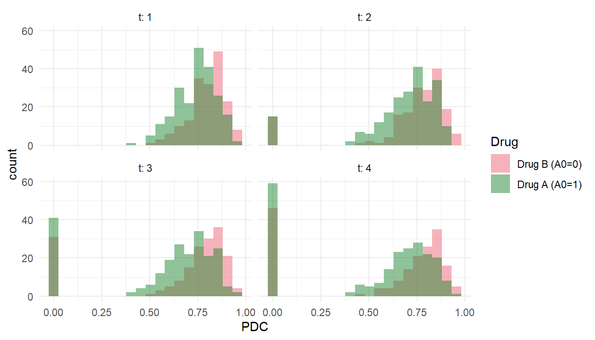

Building the wide longitudinal dataset, running diagnostics, and fitting every estimator on real-world data
Estimated reading time: 60 minutes
Learning objectives
Map pharmacy, medical, enrollment, and lab claims onto the wide longitudinal schema that ltmle and lmtp consume
Compute proportion of days covered (PDC) per block with the standard overlap-adjustment rule, including multi-pill regimens
Enforce the two invariants — absorbing failure and observation-window censoring — that the survival likelihood relies on
Run the support diagnostics that surface the practical positivity violations claims data tends to produce
Fit the four estimators used in the adherence-forgiveness analysis (naive stratification, L-TMLE static regimes, LMTP additive shift, LMTP quantile-matched drug contrast) plus the fine-bin dose-response variant, and read their output
Recognize the failure modes that bite when leaving a simulation for real-world data — block-length consistency, cutpoint coupling, boundary PDC, censoring sign conventions, learner libraries
15 Where this chapter fits
Chapter 3.3b developed the conceptual story for studying drug effects under imperfect adherence: forgiveness curves, distribution-shift interventions, and why static “always-high adherence” regimes are usually not the right target on real data. That chapter ran on a simulator. This chapter is the applied companion: it takes the same estimands and shows, end to end, how to compute them on real claims data.
The premise is that you have access to a pharmacy/medical/enrollment claims warehouse — Optum, MarketScan, Medicare 5%, Veradigm, a payer data lake, or the equivalent — and you want to answer the same kind of question developed in 3.3b on those data. The route from raw claims to an LMTP estimate has three stages, and each one fails in characteristic ways if it isn’t carefully checked:
Build the wide longitudinal dataset so that every helper in the lmtp and ltmle packages can consume it without modification.
Run support diagnostics before fitting any estimator, because positivity violations on claims data are not subtle and are not detectable from the point estimates after the fact.
Fit the menu of estimators that the adherence-forgiveness analysis uses, and contrast them — they answer related but distinct causal questions.
We assume familiarity with the treatment–confounder feedback story from Chapter 3.7, the L-TMLE backwards-sequential logic from Chapter 3.9, and the LMTP shift framework from Chapter 3.3b. None of that is re-derived here.
To make every code chunk runnable without access to a real claims warehouse, we generate a small synthetic EHR with the same five-table shape (cohort, rx, dx, lab, elig) as a typical extract. The DGP follows the same forgiveness/feedback structure used in 3.3b: a baseline severity covariate, a binary regimen, a time-varying health confounder that depends on past adherence, an adherence process that depends on the confounder, and an absorbing failure with a drug-by-adherence interaction. The simulator is not the focus of this chapter — it is a vehicle. To run the same code on real data, replace the simulate_ehr_claims() call with a dplyr::rename() step that maps your warehouse’s column names onto the same five tables and the rest of the chapter is unchanged.
16 The target data structure
The estimator helpers expect a single wide data frame with one row per patient. Indexing \(t = 1, \ldots, K\) over consecutive 90-day follow-up blocks from the patient’s index date, the required columns are:
Column
Type
Description
id
int
Patient identifier
W0
numeric
Baseline severity / risk score (standardised, mean 0, SD 1)
Time-varying health confounder measured during block t
PDC_t
numeric in [0,1]
Proportion of days covered during block t
PDC_cat_t
ordered factor
low / mid / high, cutpoints at 0.65 and 0.85
PDC_int_t
int 1/2/3
Integer code matching PDC_cat_t
C_t
int 0/1 (optional)
1 = observed at end of block t, 0 = censored
Y_t
int 0/1
Absorbing failure indicator by end of block t
Y_final
int 0/1
max(Y_1, ..., Y_K)
Two invariants apply to every row and must hold before any estimator is called:
Absorbing failure. Once Y_t = 1, every downstream L_s, PDC_s, PDC_cat_s, PDC_int_s, and C_s (for s > t) is set to NA, and Y_s is carried forward as 1. Survival likelihoods rely on this; without it, lmtp and ltmle will silently learn nonsense from the post-event nodes.
Censoring closes the row. If C_t = 0, then L_s, PDC_s, Y_s for \(s \ge t+1\) are NA. The convention follows lmtp: C_t = 1 means “still observed at the end of block t”. This is the opposite of the convention used by many EHR pipelines (where censoring is coded as 1); the most common bug we see on real-data ports of this analysis is a flipped sign here.
The chapter code also annotates attr(df, "K") <- K so a single line of code is enough to detect the number of blocks downstream.
17 The source claims tables
Three or four tables, with names that vary by warehouse, carry essentially all the information you need. The chapter assumes a standardised version:
Show code
# Pharmacy claims (rx) — one row per fill# patient_id (int), fill_date (date), days_supply (int),# ndc (char), generic_name / drug_class (char), quantity_dispensed (numeric)# Medical claims (dx) — one row per claim line# patient_id (int), service_date (date), icd10_dx (char or list),# cpt / hcpcs (char), place_of_service (char)# Enrollment / eligibility (elig) — one row per continuous coverage span# patient_id (int), enroll_start (date), enroll_end (date), plan_type (char)# Lab / biomarker (lab) — one row per lab result# patient_id (int), collect_date (date), loinc (char), value (numeric), unit (char)
Map your warehouse’s column names onto these on the way in (a dplyr::rename() step right after the read), and the rest of the chapter runs unchanged. The expensive parts of building a cohort — coverage logic, gap windows, code-list curation — are not specific to causal inference and are not what this chapter is about; we assume your team has standardised them upstream.
18 A self-contained simulated EHR
For the rest of the chapter to run, we generate a tiny synthetic EHR with the same five-table shape. The simulator below mirrors the DGP from Chapter 3.3b: drug FOCAL_DRUG (A0 = 1) is more forgiving of poor adherence than COMPARATOR (A0 = 0), encoded through a drug-by-adherence interaction in the failure hazard. The output is five tables with realistic-looking columns; everything downstream is the build pipeline an analyst would write on real claims.
cohort carries one row per patient with the index date and the (string) index regimen. Build the per-(patient, block) scaffold from there:
Show code
K <-4L # 4 x 90 = 360 days of follow-upblock_days <-90Lblocks <- cohort |> tidyr::crossing(t =seq_len(K)) |>mutate(block_start = index_date +days((t -1) * block_days),block_end = index_date +days(t * block_days) -days(1) )dim(blocks)#> [1] 1600 6
blocks is the scaffold every subsequent piece joins to. Changing K or block_days changes the estimand (the follow-up horizon and the resolution at which you observe adherence), so commit to values up front and keep them consistent everywhere — including the attr(df, "K") <- K annotation later and the K = ... argument passed to the fitters.
20 Building each column
20.1 Baseline W0 and A0
A0 is the index regimen, coded 0/1 to match the simulator and the helpers:
W0 is a continuous baseline severity score from the baseline window (e.g., 180 days pre-index). Common operationalisations: a standardised Charlson or Elixhauser comorbidity index, a standardised count of prior hospitalisations/ED visits, or a standardised baseline CD4 or viral load if labs are linked. Whatever you use, standardise it (mean 0, SD 1) so its scale matches the simulator’s \(W_0 \sim N(0, 1)\) and so no nuisance learner’s regularisation is dominated by an unscaled count.
Show code
baseline_window_days <-180L# On real data, map_charlson() is a curated ICD-10 -> Charlson weight lookup.# Here we score any of the six baseline codes the simulator emits as eligible.charlson_eligible <-c("I10", "E11.9", "K21.9", "J45.40", "I25.10", "N18.3")map_charlson <-function(icd10_dx) as.integer(icd10_dx %in% charlson_eligible)dx_baseline <- dx |>inner_join(cohort, by ="patient_id") |>filter(service_date >= index_date -days(baseline_window_days), service_date < index_date)charlson <- dx_baseline |>mutate(cci_dx =map_charlson(icd10_dx)) |>group_by(patient_id) |>summarise(cci =sum(cci_dx, na.rm =TRUE), .groups ="drop")cohort <- cohort |>left_join(charlson, by ="patient_id") |>mutate(cci = tidyr::replace_na(cci, 0),W0 =scale(cci)[, 1])summary(cohort$W0)#> Min. 1st Qu. Median Mean 3rd Qu. Max. #> -0.6313 -0.6313 -0.6313 0.0000 0.4297 4.6740
If you build W0 from several components (severity index + prior utilisation + lab), assemble them into a single combined score per patient and standardise that, rather than passing five separate baseline columns. The helpers will accept extra baseline columns, but the nuisance models become heavier without much gain.
20.2 Time-varying confounder L_t
L_t is the contemporaneous health-status confounder: a measurement during block t that both predicts future adherence and is itself affected by past adherence. This is the variable that creates the treatment–confounder feedback structure motivating g-methods in the first place (Chapter 3.7). From claims, the natural candidates are a count of ED or inpatient visits during block t, a 90-day update of the comorbidity score, or the most recent on-treatment lab if labs are linked.
If you assemble L_t from several components, combine them into one standardised score per (patient, block).
20.3 Proportion of days covered, PDC_t
This is the central transformation and the one that most often goes wrong. PDC for block t is the fraction of days in [block_start, block_end] during which the patient was covered by any fill of the focal drug class. The standard claims-PDC convention is:
Subset pharmacy fills to the focal class only.
For each fill, create a covered interval [fill_date, fill_date + days_supply - 1].
For early refills (overlap with previous coverage), push the new fill’s start forward so coverage doesn’t double-count. This matters in particular for combination regimens.
Intersect the covered intervals with each block’s window and divide by block_days.
In this simulator both arms are antiretrovirals; the focal class covers both, so PDC measures coverage of the prescribed regimen for everyone.
Show code
focal_class <-c("DOLUTEGRAVIR", "EFAVIRENZ")rx_focal <- rx |>inner_join(cohort, by ="patient_id") |>filter(generic_name %in% focal_class, fill_date >= index_date, fill_date < index_date +days(K * block_days)) |>arrange(patient_id, fill_date)# Push overlapping fills forward so total covered days <= real elapsed daysrx_adj <- rx_focal |>group_by(patient_id) |>mutate(cover_end_prev =as.numeric(lag(cumsum(days_supply))),days_from_idx =as.numeric(fill_date - index_date),cover_start =pmax(days_from_idx, tidyr::replace_na(cover_end_prev, -Inf)),cover_end = cover_start + days_supply -1 ) |>ungroup()# Intersect each fill's covered span with each block's [start, end]pdc_long <- rx_adj |> tidyr::crossing(t =seq_len(K)) |>mutate(blk_start = (t -1L) * block_days,blk_end = t * block_days -1L,cov_in_blk =pmax(0L, pmin(cover_end, blk_end) -pmax(cover_start, blk_start) +1L) ) |>group_by(patient_id, t) |>summarise(covered_days =sum(cov_in_blk), .groups ="drop") |>mutate(PDC =pmin(1, covered_days / block_days))# Patients with zero fills in a block need an explicit zeropdc_long <- blocks |>select(patient_id, t) |>left_join(pdc_long, by =c("patient_id", "t")) |>mutate(PDC = tidyr::replace_na(PDC, 0))summary(pdc_long$PDC)#> Min. 1st Qu. Median Mean 3rd Qu. Max. #> 0.0000 0.6333 0.7556 0.6592 0.8333 0.9556
For multi-pill regimens (e.g., bictegravir + emtricitabine + tenofovir alafenamide as BIC/FTC/TAF), the convention is to compute PDC on the anchor molecule. If you want a multi-pill composite, compute per-molecule PDC and take the minimum across components — that is the conservative regimen-level coverage. Do not average; an average masks the kind of partial-regimen exposure that drives resistance.
Categorise PDC using the same cutpoints used by the helpers — the L-TMLE estimator’s Acat2_t / Acat3_t dummies are derived from these cuts, so any mismatch silently changes the estimand:
If your protocol uses different cutpoints (some HIV protocols use 0.80 / 0.95), change them in the data-prep step and anywhere downstream the analyses reference them — the categorical L-TMLE analysis and the naive stratified analysis must use the same bin edges.
20.4 Outcome Y_t and absorbing carry-forward
Y_t = 1 iff the patient experienced a failure-equivalent event by the end of block t. For HIV, common operationalisations are a viral-load lab result exceeding the protocol cutoff (e.g., 200 copies/mL) after prior suppression, emergence of resistance-associated mutations, or a regimen switch flagged as failure-driven.
Build the block-level indicator from your event source, then apply cummax() to enforce the absorbing property:
20.5 Informative monitoring: enrollment and outcome ascertainment
In a randomised trial the analyst gets to decide when each participant is observed. In claims, observation itself is endogenous: a patient appears in our analysis dataset in block t only if (a) they were still enrolled, and (b) the outcome of interest was actually ascertained — typically because the relevant lab or test was ordered and resulted in the data. Both pieces depend on the same time-varying covariates that drive adherence and failure, and both can introduce bias if they are ignored.
Two distinct informative-observation mechanisms collide on a real claims dataset, and they need to be combined into a single C_t indicator before any estimator is fit.
1. Enrollment-based censoring. A patient may lose insurance coverage, switch to a payer not represented in the warehouse, or otherwise drop out of the claims extract. Enrollment ending is often weakly informative on baseline covariates (employment status, age) and at most weakly informative on post-baseline health — a defensible “missing-at-random given baseline” assumption is sometimes appropriate, though the more rigorous default is to model it.
2. Outcome-ascertainment-driven censoring. This is the structurally harder problem and the one that bites pharmacoepi analyses most often. The chapter’s outcome (\(Y_t\) = virologic failure or new resistance mutation) is defined by a test result. If no test happens in block t, the outcome is unascertained, not zero. And test ordering is not random — patients with low adherence and disengagement from care get fewer routine viral-load and resistance tests. So absence of a test is correlated with both the underlying outcome (via adherence) and with the treatment process itself. Treating “no test in this block” as “\(Y_t = 0\)” — which is what naive cohort builds do — therefore introduces bias in the same direction as the bias from informative censoring on enrollment, but driven by a different mechanism. The right response is to recognise it as a second censoring channel and reweight for it.
Both mechanisms are handled by lmtp and ltmle through the same cens argument. The trick is to combine them into a single block-level observation indicator:
\[
C_t = \mathbf{1}\{\text{enrolled for the full block}\} \times \mathbf{1}\{\text{at least one outcome-relevant test in the block}\}.
\]
In the chapter’s HIV-failure example, the outcome-relevant test is the viral-load lab — the same lab that defines \(Y_t\) when it returns a high value. In Sarah’s resistance study (referenced in the source material for this chapter), the outcome-relevant test is the genotypic resistance assay. The principle is the same: a row is observed at the end of block t only if the patient was both enrolled and tested.
Once C_t = 0:
the row is closed: \(L_s\), \(\mathrm{PDC}_s\), \(Y_s\) for \(s \ge t+1\) are NA;
a row censored at the same block as a confirmed event is treated as having failed, not as censored — the absorbing carry-forward dominates;
the probability of being observed conditional on covariate history is modelled by lmtp::lmtp_tmle() and ltmle::ltmle() as a nuisance function, so the censoring mechanism must be informative on observed history (sequential exchangeability of \(C_t\) given \(W_0\), \(L_t\), and prior adherence). This is the analogue of sequential exchangeability for treatment — and it is the only assumption that lets the analysis compensate for missing tests.
On a real claims dataset the combined observation indicator is built from two components and combined into a single monotone censoring variable. This is the construction we recommend for an applied analysis; the chapter’s worked example below uses the simpler enrollment-only C_t because the simulator emits a routine VL test in every observed block (so the testing component is degenerate and the combined indicator collapses to the enrollment one).
Show code
# Real-data construction of C_t (combine enrollment + outcome ascertainment).# Use this on your warehouse data; the chapter's simulator below uses the# enrollment-only fallback because routine testing is deterministic there.# Component 1: enrolled for the full blockenroll_long <- blocks |>left_join(elig, by ="patient_id") |>group_by(patient_id, t, block_start, block_end) |>summarise(covered_full_block =any(enroll_start <= block_start & enroll_end >= block_end),.groups ="drop" ) |>select(patient_id, t, covered_full_block)# Component 2: at least one outcome-relevant test in the block# (any VL lab; failure-level VLs are a subset)tested_long <- lab |>filter(loinc %in% vl_loincs) |>inner_join(blocks, by ="patient_id") |>filter(collect_date >= block_start, collect_date <= block_end) |>distinct(patient_id, t) |>mutate(tested =1L)# Combined observation indicator. Monotone via cummin: once a patient# is unobserved at any block (lost enrollment OR no outcome test), the# row is closed from that block onward. This matches the survival# likelihood that lmtp and ltmle fit, which expects C_t = 0 to be an# absorbing state.cens_long_combined <- blocks |>select(patient_id, t) |>left_join(enroll_long, by =c("patient_id", "t")) |>left_join(tested_long, by =c("patient_id", "t")) |>mutate(tested = tidyr::replace_na(tested, 0L),obs_block =as.integer(covered_full_block & tested ==1L) ) |>group_by(patient_id) |>arrange(t, .by_group =TRUE) |>mutate(C =cummin(obs_block)) |>ungroup() |>select(patient_id, t, C)# Diagnostic on real data: what fraction is censored at each block, by drug?# A meaningful gap by drug indicates that outcome ascertainment is informative# on adherence and the censoring nodes are doing real work.cens_long_combined |>left_join(cohort |>select(patient_id, A0), by ="patient_id") |>group_by(t, drug =ifelse(A0 ==1, "Drug A", "Drug B")) |>summarise(pct_censored =round(100*mean(C ==0), 1),.groups ="drop")
Practical note on the combined indicator and lmtp
We have observed (lmtp 1.5.0) that fitting lmtp_tmle() against the combined indicator above can fail with a subscript out of bounds error when block-1 censoring is meaningful — this appears to be a known interaction between the cross-fit partitioning and right-censoring patterns. Two workarounds when you hit this: (1) restrict the analysis to subjects with C_1 = 1 (drop never-observed subjects) before fitting, and (2) if the error persists, fit lmtp_sdr() in place of lmtp_tmle() — the sequentially doubly robust estimator handles the same estimand and is more robust to this particular failure mode. Both fits return the same risk-scale point estimates and SE structure.
For the chapter’s worked example we use the simpler enrollment-only C_t (since the simulator emits a routine VL in every observed block, the testing component is degenerate):
Show code
# Enrollment-only C_t used by the runnable chunks belowcens_long <- blocks |>left_join(elig, by ="patient_id") |>group_by(patient_id, t) |>summarise(covered_full_block =any(enroll_start <= block_start & enroll_end >= block_end),.groups ="drop" ) |>mutate(C =as.integer(covered_full_block))cens_long |>group_by(t) |>summarise(pct_censored =round(100*mean(C ==0), 1))#> # A tibble: 4 × 2#> t pct_censored#> <int> <dbl>#> 1 1 0 #> 2 2 1.8#> 3 3 4.5#> 4 4 6.2
Sensitivity to the assumption. Sequential exchangeability of C_t given observed history is not testable from the data. Two practical checks help bound its plausibility:
A negative control on testing. If you can identify a subset of patients whose testing should be plausibly random with respect to adherence (e.g., patients enrolled in a structured monitoring program with mandatory testing schedules), compare the LMTP shift estimated on the full cohort to the estimate restricted to that subset. Material differences suggest informative ascertainment is still leaking through.
Vary the operationalisation. Build C_t once with “any VL test in the block” and again with “VL test plus active clinical contact” (e.g., any office visit). If the headline estimates move meaningfully, the testing model is doing real work and the assumption is consequential.
If your study can plausibly assume that both enrollment and outcome ascertainment are independent of post-baseline health given baseline covariates, you can skip the cens argument entirely and pass include_censoring = FALSE to the helpers. That is a strong assumption on a pharmacoepi cohort and almost never holds in practice; modelling C_t explicitly is the default.
20.6 Long → wide and enforcing the invariants
Join everything into one long frame, pivot to the wide layout, and apply both invariants in a single pass:
Show code
long <- blocks |>select(patient_id, t) |>left_join(L_long, by =c("patient_id", "t")) |>left_join(pdc_long, by =c("patient_id", "t")) |>left_join(Y_long, by =c("patient_id", "t")) |>left_join(cens_long, by =c("patient_id", "t"))wide <- long |>select(patient_id, t, L, PDC, PDC_cat, PDC_int, C, Y) |> tidyr::pivot_wider(id_cols = patient_id,names_from = t,values_from =c(L, PDC, PDC_cat, PDC_int, C, Y),names_sep ="_" ) |>left_join(cohort |>select(patient_id, W0, A0), by ="patient_id") |>rename(id = patient_id) |>select(id, W0, A0, everything())
The two helper functions below enforce the invariants. They are short enough to read in place, so we include them inline. Both are idempotent: running them twice does nothing.
The shape of claims data — heaped at PDC 0 and PDC 1, with substantial blocks of “no fills” that translate to PDC = 0, and small cells when you stratify by drug and block — is exactly the shape that L-TMLE positivity violations exploit. Run a support diagnostic before fitting anything. The function below is a minimal version of the diagnose_ltmle_support_v4() printer from the companion repo; the full version (with formatted tables, additional summaries) is sourced from simulation/R/prepare_ltmle.R.
Show code
diagnose_ltmle_support <-function(df, K =attr(df, "K")) {cat("\n── PDC category frequencies, by block and drug ──\n")for (t inseq_len(K)) { cat_col <-paste0("PDC_cat_", t) tab <-table(Drug =ifelse(df$A0 ==1, "Drug A", "Drug B"),Category = df[[cat_col]], useNA ="ifany")cat(sprintf("\nBlock %d:\n", t)); print(tab) }cat("\n── Subjects following each static regime for ALL blocks ──\n")for (d in0:1) { idx <- df$A0 == d; n_d <-sum(idx) dlabel <-ifelse(d ==0, "Drug B", "Drug A")for (regime inc("always_high", "always_mid", "always_low")) { target <-switch(regime, always_high ="high",always_mid ="mid", always_low ="low") follows <-rep(TRUE, n_d)for (t inseq_len(K)) { vals <-as.character(df[[paste0("PDC_cat_", t)]][idx]) follows <- follows &!is.na(vals) & vals == target }cat(sprintf(" %s, %s: %d / %d (%.1f%%)\n", dlabel, regime, sum(follows), n_d,100*sum(follows) / n_d)) } }cat("\n── PDC summary by block and drug ──\n")for (t inseq_len(K)) for (d in0:1) { v <- df[[paste0("PDC_", t)]][df$A0 == d] v <- v[!is.na(v)]cat(sprintf(" Block %d, %s: mean=%.3f sd=%.3f min=%.3f max=%.3f %%<0.05=%.1f%% %%>0.95=%.1f%%\n", t, ifelse(d ==0, "Drug B", "Drug A"),mean(v), sd(v), min(v), max(v),100*mean(v <0.05), 100*mean(v >0.95))) }}diagnose_ltmle_support(wide)#> #> ── PDC category frequencies, by block and drug ──#> #> Block 1:#> Category#> Drug low mid high#> Drug A 37 152 31#> Drug B 12 105 63#> #> Block 2:#> Category#> Drug low mid high <NA>#> Drug A 53 123 32 12#> Drug B 18 102 49 11#> #> Block 3:#> Category#> Drug low mid high <NA>#> Drug A 58 110 17 35#> Drug B 17 92 45 26#> #> Block 4:#> Category#> Drug low mid high <NA>#> Drug A 43 97 24 56#> Drug B 15 79 44 42#> #> ── Subjects following each static regime for ALL blocks ──#> Drug B, always_high: 1 / 180 (0.6%)#> Drug B, always_mid: 17 / 180 (9.4%)#> Drug B, always_low: 0 / 180 (0.0%)#> Drug A, always_high: 0 / 220 (0.0%)#> Drug A, always_mid: 28 / 220 (12.7%)#> Drug A, always_low: 2 / 220 (0.9%)#> #> ── PDC summary by block and drug ──#> Block 1, Drug B: mean=0.802 sd=0.089 min=0.500 max=0.944 %<0.05=0.0% %>0.95=0.0%#> Block 1, Drug A: mean=0.745 sd=0.102 min=0.378 max=0.944 %<0.05=0.0% %>0.95=0.0%#> Block 2, Drug B: mean=0.770 sd=0.153 min=0.000 max=0.956 %<0.05=2.4% %>0.95=1.8%#> Block 2, Drug A: mean=0.713 sd=0.145 min=0.000 max=0.922 %<0.05=1.4% %>0.95=0.0%#> Block 3, Drug B: mean=0.769 sd=0.166 min=0.000 max=0.956 %<0.05=3.2% %>0.95=1.3%#> Block 3, Drug A: mean=0.690 sd=0.169 min=0.000 max=0.956 %<0.05=3.2% %>0.95=0.5%#> Block 4, Drug B: mean=0.770 sd=0.163 min=0.000 max=0.956 %<0.05=2.9% %>0.95=0.7%#> Block 4, Drug A: mean=0.706 sd=0.151 min=0.000 max=0.956 %<0.05=1.8% %>0.95=0.6%
Three things to read out of that:
Category frequencies by (drug, block). Sparse cells in the low or high category translate directly into rank-deficient propensity models inside L-TMLE; if a cell is empty, the corresponding static-regime estimand is not identified from these data and L-TMLE will collapse with a near-zero effective sample size.
Subjects who follow each static regime for all K blocks. If, say, always_low is followed by fewer than ~1% of subjects in the focal-drug arm, the static “always-low adherence” estimand is weakly identified at best; lean on the LMTP shift analyses instead and treat the L-TMLE static result as a sensitivity check.
PDC summary (mean, sd, min, max, percent below 0.05, percent above 0.95) by (block, drug). Heavy mass near 0 or 1 is fine for the LMTP additive shift (it stays inside the support by construction) but makes the density-ratio estimate inside lmtp noisier; the quantile-matched contrast can extrapolate where the two drugs’ tails diverge.
A visual check is also worth the two lines of code:
Show code
library(ggplot2)long |>left_join(cohort |>select(patient_id, A0), by ="patient_id") |>ggplot(aes(PDC, fill =factor(A0))) +geom_histogram(position ="identity", alpha =0.5, bins =20) +facet_wrap(~ t, labeller = label_both) +scale_fill_manual(values =c("0"="#EE6677", "1"="#228833"),labels =c("0"="Drug B (A0=0)", "1"="Drug A (A0=1)"),name ="Drug") +labs(x ="PDC", y ="count") +theme_minimal()

Figure 21.1: PDC distributions by drug and block. Heavily overlapping supports are reassuring for the additive shift and the quantile-matched contrast; visibly disjoint supports in any block flag extrapolation risk.
22 Analysis 1: naive PDC-stratified failure rate
The unadjusted descriptive benchmark — what an analysis that ignores treatment–confounder feedback would publish. Useful as a contrast for the causal estimates and as a sanity check that the cohort makes clinical sense, but biased by construction in any setting with the kind of feedback structure described in Chapter 3.7.
This is the “naive” estimator referenced in the companion simulation’s run_one_iteration.R. On the simulator it is biased toward overstating the adherence–outcome relationship; on real data it is the descriptive table you would publish if you were not doing causal inference. Present it alongside the causal estimates so reviewers can see what the unadjusted picture looks like.
23 Analysis 2: L-TMLE for static categorical regimes
The primary L-TMLE analysis. For each drug, estimate the counterfactual risk under three sustained regimes — always-low, always-mid, always-high adherence — across all K blocks. Three regimes × two drugs = six estimates.
We do not source the companion repo’s fit_ltmle_v4_all() wrapper here; instead we call ltmle::ltmle() directly so the chapter is self-contained. The wrapper builds the following before each call:
Treatment recoding.PDC_int_t is recoded into two binary treatment nodes per block, Acat2_t = 1{mid} and Acat3_t = 1{high}. The low category is the reference (both dummies zero).
A deterministic-g function so that whenever Acat2_t = 1, the propensity model for Acat3_t is forced to predict zero. This encodes the categorical structure: at any block a patient is in exactly one category.
Simplified Qform / gform formulas that depend only on W0, the current L_t, and the within-block treatment dummies. The default ltmle::ltmle() formulas, which condition on the full history at every node, are rank-deficient on this data structure; the simplified forms avoid that.
abar set to the static-regime vector for the requested regime — for always_high, \(\bar a = (0, 1, 0, 1, \ldots)\) in (Acat2_1, Acat3_1, Acat2_2, Acat3_2, \ldots) order, and so on.
Show code
fit_ltmle_static <-function(df, drug, regime,K =attr(df, "K"),sl_lib ="glm") {stopifnot(regime %in%c("always_low", "always_mid", "always_high")) d <- df[df$A0 == drug, , drop =FALSE]# Build wide frame for ltmle in chronological column order# (W0, then per block: L_t, C_t, Acat2_t, Acat3_t, Y_t) out <-data.frame(W0 = d$W0)for (t inseq_len(K)) { out[[paste0("L_", t)]] <- d[[paste0("L_", t)]] c_t <- d[[paste0("C_", t)]] out[[paste0("C_", t)]] <-factor(ifelse(is.na(c_t), NA_character_,ifelse(c_t ==1L, "uncensored", "censored")),levels =c("censored", "uncensored") ) int_t <- d[[paste0("PDC_int_", t)]] out[[paste0("Acat2_", t)]] <-as.integer(!is.na(int_t) & int_t ==2L) out[[paste0("Acat3_", t)]] <-as.integer(!is.na(int_t) & int_t ==3L) out[[paste0("Acat2_", t)]][is.na(int_t)] <-NA_integer_ out[[paste0("Acat3_", t)]][is.na(int_t)] <-NA_integer_ out[[paste0("Y_", t)]] <- d[[paste0("Y_", t)]] }# Re-enforce absorbing on the recoded Anodes (Y carry-forward already in df)for (t inseq_len(K -1)) { failed <-!is.na(out[[paste0("Y_", t)]]) & out[[paste0("Y_", t)]] ==1Lfor (s in (t +1):K) { out[[paste0("L_", s)]][failed] <-NA_real_ out[[paste0("Acat2_", s)]][failed] <-NA_integer_ out[[paste0("Acat3_", s)]][failed] <-NA_integer_ out[[paste0("Y_", s)]][failed] <-1L } } Lnodes <-c("W0", paste0("L_", seq_len(K))) Cnodes <-paste0("C_", seq_len(K)) Anodes <-as.vector(rbind(paste0("Acat2_", seq_len(K)),paste0("Acat3_", seq_len(K)))) Ynodes <-paste0("Y_", seq_len(K)) Qform <-setNames(sprintf("Q.kplus1 ~ W0 + L_%d + Acat2_%d + Acat3_%d",seq_len(K), seq_len(K), seq_len(K)), Ynodes )# gform must align with the chronological order of A/C nodes in the data:# C_1, Acat2_1, Acat3_1, C_2, Acat2_2, Acat3_2, ... gform <-unlist(lapply(seq_len(K), function(t) c(setNames(sprintf("C_%d ~ W0 + L_%d", t, t), paste0("C_", t)),setNames(sprintf("Acat2_%d ~ W0 + L_%d", t, t), paste0("Acat2_", t)),setNames(sprintf("Acat3_%d ~ W0 + L_%d + Acat2_%d", t, t, t),paste0("Acat3_", t)) )))# Deterministic-g: if Acat2_t == 1, then P(Acat3_t = 1 | ...) = 0 det_g <-function(data, current.node, nodes) { nm <-names(data)[current.node]if (grepl("^Acat3_", nm)) { t <-sub("Acat3_", "", nm) a2 <- data[[paste0("Acat2_", t)]] blk <-!is.na(a2) & a2 ==1Lif (any(blk)) return(list(is.deterministic = blk, prob1 =0)) }NULL } abar_block <-switch(regime,always_low =c(0L, 0L),always_mid =c(1L, 0L),always_high =c(0L, 1L)) abar <-rep(abar_block, K) fit <- ltmle::ltmle( out,Anodes = Anodes,Cnodes = Cnodes,Lnodes = Lnodes,Ynodes = Ynodes,abar = abar,Qform = Qform,gform = gform,survivalOutcome =TRUE,SL.library = sl_lib,estimate.time =FALSE,deterministic.g.function = det_g,variance.method ="ic" ) s <-summary(fit) est <-as.numeric(fit$estimates["tmle"]) se <- s$treatment$std.devlist(estimate = est, se = se,ci_lo = est -1.96* se,ci_hi = est +1.96* se)}ltmle_grid <-expand.grid(drug =0:1,regime =c("always_low", "always_mid", "always_high"),stringsAsFactors =FALSE)ltmle_all <- purrr::pmap_dfr(ltmle_grid, function(drug, regime) { r <-fit_ltmle_static(wide, drug = drug, regime = regime,K = K, sl_lib ="glm")tibble(drug = drug,drug_label =ifelse(drug ==0, "Drug B", "Drug A"),regime = regime,estimate = r$estimate, se = r$se,ci_lo = r$ci_lo, ci_hi = r$ci_hi)})ltmle_all#> # A tibble: 6 × 7#> drug drug_label regime estimate se ci_lo ci_hi#> <int> <chr> <chr> <dbl> <dbl> <dbl> <dbl>#> 1 0 Drug B always_low 0.668 0.0531 0.564 0.772#> 2 1 Drug A always_low 0.768 0.201 0.374 1.16 #> 3 0 Drug B always_mid 0.160 0.0452 0.0712 0.248#> 4 1 Drug A always_mid 0.247 0.0536 0.142 0.352#> 5 0 Drug B always_high 0.149 0.0680 0.0155 0.282#> 6 1 Drug A always_high 0.179 0.0350 0.110 0.247
The sl_lib argument is forwarded to SuperLearner::SuperLearner for both the Q-fit (outcome) and g-fit (propensity). The simulation uses "glm" because the DGP is parametric; on real claims data use at minimum a small ensemble like c("SL.mean", "SL.glm", "SL.glmnet", "SL.earth"). Add "SL.ranger" or "SL.xgboost" if your sample size supports it (rough rule of thumb: at least 50 events per tree-based learner). Single-glm libraries on real data give you a parametric L-TMLE in TMLE clothing — not what you want.
The headline LMTP estimand from the slides and manuscript: the counterfactual risk under the modified treatment policy\(\mathrm{PDC}_t \to \min(\mathrm{PDC}_t + 0.10, \; 1)\). Every shifted value is inside the observed support (a feasible shift), so positivity is much less of a worry than for the static regimes. The interpretation is “what would the failure risk be if everyone’s adherence were 10 percentage points higher than what they actually achieved” — a question a real adherence-support intervention can plausibly target.
The companion repo wraps lmtp::lmtp_tmle() in fit_lmtp_shift_v4() for convenience; here we call the API directly with the explicit node specifications. The build is:
the additive shift function function(data, trt) pmin(data[[trt]] + delta, 1);
mtp = TRUE, outcome_type = "survival".
Show code
trt_nodes <-paste0("PDC_", seq_len(K))out_nodes <-paste0("Y_", seq_len(K))cns_nodes <-paste0("C_", seq_len(K))tv_nodes <-as.list(paste0("L_", seq_len(K)))baseline <-"W0"# within a drug stratum, A0 is constant and dropped# Reorder columns in the order lmtp expects within each blockreorder_for_lmtp <-function(df, K, include_censoring =TRUE) { cols <-c("W0")for (t inseq_len(K)) { cols <-c(cols, paste0("L_", t))if (include_censoring) cols <-c(cols, paste0("C_", t)) cols <-c(cols, paste0("PDC_", t), paste0("Y_", t)) } df[, cols, drop =FALSE]}shift_up <-function(data, trt) pmin(data[[trt]] +0.10, 1.0)shift_id <-function(data, trt) data[[trt]]# Drug-stratified LMTP under the +10pp shift and under the natural courserun_lmtp <-function(df, drug, shift_fn, K =attr(df, "K"),learners ="SL.glm") { d <- df[df$A0 == drug, , drop =FALSE] d <-reorder_for_lmtp(d, K, include_censoring =TRUE) fit <- lmtp::lmtp_tmle(data = d,trt = trt_nodes,outcome = out_nodes,baseline = baseline,time_vary = tv_nodes,cens = cns_nodes,shift = shift_fn,mtp =TRUE,outcome_type ="survival",learners_trt = learners,learners_outcome = learners,folds =1 ) td <- lmtp::tidy(fit)list(fit = fit,risk_estimate =1- td$estimate[1],se = td$std.error[1],ci_lo =1- td$conf.high[1],ci_hi =1- td$conf.low[1])}shift_A <-run_lmtp(wide, drug =1, shift_fn = shift_up)shift_B <-run_lmtp(wide, drug =0, shift_fn = shift_up)nat_A <-run_lmtp(wide, drug =1, shift_fn = shift_id)nat_B <-run_lmtp(wide, drug =0, shift_fn = shift_id)tibble::tibble(arm =c("Drug A, +10pp shift", "Drug B, +10pp shift","Drug A, natural", "Drug B, natural"),risk =c(shift_A$risk_estimate, shift_B$risk_estimate, nat_A$risk_estimate, nat_B$risk_estimate),se =c(shift_A$se, shift_B$se, nat_A$se, nat_B$se),ci_lo =c(shift_A$ci_lo, shift_B$ci_lo, nat_A$ci_lo, nat_B$ci_lo),ci_hi =c(shift_A$ci_hi, shift_B$ci_hi, nat_A$ci_hi, nat_B$ci_hi))#> # A tibble: 4 × 5#> arm risk se ci_lo ci_hi#> <chr> <dbl> <dbl> <dbl> <dbl>#> 1 Drug A, +10pp shift 0.155 0.0311 0.0940 0.216#> 2 Drug B, +10pp shift 0.160 0.0295 0.103 0.218#> 3 Drug A, natural 0.284 0.0316 0.222 0.346#> 4 Drug B, natural 0.270 0.0361 0.199 0.341
Risk vs. survival
lmtp::lmtp_tmle() with outcome_type = "survival" returns \(P(\text{survive})\), not \(P(\text{fail})\). The run_lmtp() wrapper above inverts this to a risk via 1 - tidy(fit)$estimate and flips the confidence bounds accordingly. Every estimate reported in this chapter is on the risk scale. If you swap in a raw lmtp_tmle() call without that inversion, you will report survival probabilities labelled “risk”.
For a direct lmtp::lmtp_contrast() between the shifted and natural fits — useful when you want the package’s variance computation rather than a manual difference of SEs:
Show code
lmtp::lmtp_contrast(shift_A$fit, ref = nat_A$fit, type ="additive")
The reported theta is on the survival scale (a positive value means the shift increases survival). Flip the sign to read it as risk reduction.
25 Analysis 4: LMTP quantile-matched drug comparison
The drug-effect analysis that takes adherence out of the picture as a confounder. The reference drug is left at its observed adherence distribution; the other drug’s PDC distribution is quantile-mapped block-by-block to match the reference drug’s. The contrast then estimates the difference in risk between the two drugs under the same adherence distribution — i.e., how much of the drug-vs-drug gap is pharmacology rather than adherence behaviour.
Show code
make_quantile_match <-function(df, from_drug, to_drug, K) { trt_nodes <-paste0("PDC_", seq_len(K)) target <-vector("list", K) ecdf_from <-vector("list", K)for (t inseq_len(K)) { pdc <-paste0("PDC_", t) v_from <- df[[pdc]][df$A0 == from_drug]; v_from <- v_from[!is.na(v_from)] v_to <- df[[pdc]][df$A0 == to_drug]; v_to <- v_to[!is.na(v_to)] ecdf_from[[t]] <-ecdf(v_from) target[[t]] <-sort(v_to) }function(data, trt) { t_idx <-match(trt, trt_nodes)if (is.na(t_idx)) return(data[[trt]]) v <- data[[trt]] out <- v obs <-!is.na(v) q <- ecdf_from[[t_idx]](v[obs]) out[obs] <-quantile(target[[t_idx]], probs = q, type =1) out }}# Hold reference (Drug B, A0 = 0) at its natural distribution; match Drug A to it.ref_drug <-0other_drug <-1ref_fit <-run_lmtp(wide, drug = ref_drug, shift_fn = shift_id)match_fn <-make_quantile_match(wide,from_drug = other_drug,to_drug = ref_drug,K = K)oth_fit <-run_lmtp(wide, drug = other_drug, shift_fn = match_fn)matched <- tibble::tibble(drug =c(ref_drug, other_drug),drug_label =c("Drug B (reference)", "Drug A (matched to B)"),risk =c(ref_fit$risk_estimate, oth_fit$risk_estimate),se =c(ref_fit$se, oth_fit$se),ci_lo =c(ref_fit$ci_lo, oth_fit$ci_lo),ci_hi =c(ref_fit$ci_hi, oth_fit$ci_hi))matched#> # A tibble: 2 × 6#> drug drug_label risk se ci_lo ci_hi#> <dbl> <chr> <dbl> <dbl> <dbl> <dbl>#> 1 0 Drug B (reference) 0.270 0.0361 0.199 0.341#> 2 1 Drug A (matched to B) 0.193 0.0328 0.129 0.257# Head-to-head risk difference (A - B under matched adherence)rd <- oth_fit$risk_estimate - ref_fit$risk_estimatese_rd <-sqrt(oth_fit$se^2+ ref_fit$se^2)tibble::tibble(label ="Drug A - Drug B (under matched adherence)", rd, se = se_rd,ci_lo = rd -1.96* se_rd,ci_hi = rd +1.96* se_rd)#> # A tibble: 1 × 5#> label rd se ci_lo ci_hi#> <chr> <dbl> <dbl> <dbl> <dbl>#> 1 Drug A - Drug B (under matched adherence) -0.0770 0.0488 -0.173 0.0186
The estimand here is not a within-arm shift — it is a between-arm comparison under counterfactually matched adherence. Read the contrast label carefully: it spells out which drug is held fixed and which is shifted, so the sign has an unambiguous interpretation.
When the supports diverge
Quantile matching works only where there is overlap in the two drugs’ PDC distributions. If your overlap plot (above) shows visibly disjoint supports in any block, the quantile map is extrapolating in that block and the contrast is unreliable. The right responses are: trim to the overlapping support, restrict to the blocks with adequate overlap, or replace the quantile-matched contrast with a stratified analysis at fixed PDC levels.
26 Analysis 5: fine-bin L-TMLE dose-response
The dose-response figure used in the talk and manuscript replaces the three-category coarsening of Analysis 2 with a finer multi-bin grid and traces the counterfactual risk across PDC bins, by drug. The pattern is the same as the three-category L-TMLE: one binary dummy per non-reference bin, deterministic-g chain so that at most one bin dummy is 1, and abar targeting “always in bin b”.
For the chapter we use a four-bin grid (40% / 60% / 80% / 100%) so the render runtime stays modest; in the slide deck the same logic is run on a finer seven-bin grid:
Figure 26.1: Fine-bin L-TMLE dose-response. Each point is the counterfactual failure risk under the static regime ‘always in this PDC bin’. Wide error bars at extreme bins reflect weak positivity for sustained low- or high-adherence regimes.
The fine-bin dose-response is more demanding on positivity than either the three-category L-TMLE or the LMTP shift, because each bin defines a much narrower static regime. Expect some bins (especially the low ones on the focal drug) to have wide CIs or to fail to converge; the converged column lets you flag them rather than silently dropping them.
27 Extending to a richer outcome: viral-load distributions
The chapter’s outcome is binary: \(Y_t = 1\) iff a failure-equivalent event (VL > 200, or new resistance mutation) by the end of block t. For some downstream uses — feeding the results into an HIV transmission model where transmissibility depends on the viral-load distribution among the not-suppressed, not just on suppressed-vs-not-suppressed status — the binary outcome is too coarse. The same g-method framework extends to richer outcomes with small API changes; the wide schema, censoring handling, diagnostic stack, and shift definitions all carry over.
Continuous outcome (mean counterfactual log-VL). Replace Y_t with log10(VL_t) — the VL measured at the end of block t, with imputation for blocks without a test. Switch lmtp::lmtp_tmle() to outcome_type = "continuous". The +10pp shift estimand becomes the mean counterfactual log-VL by drug; the contrast against natural-course gives the mean reduction in log-VL achievable by an adherence intervention.
Binned outcome (conditional VL distribution). Bin VL into clinically meaningful categories — e.g., suppressed (<50), low-detectable (50–1000), moderate (1000–10000), high (>10000). For each bin, build a binary indicator Y_t^{(bin)} = 1{VL_t in bin} and fit lmtp_tmle() with outcome_type = "binomial". The collection of per-bin counterfactual probabilities is the counterfactual VL distribution under the intervention — exactly the input most transmission models need to translate adherence shifts into infection-averted estimates.
Show code
vl_bins <-list(suppressed =function(v) v <50,low =function(v) v >=50& v <1000,moderate =function(v) v >=1000& v <10000,high =function(v) v >=10000)results <-list()for (bin_name innames(vl_bins)) { wide_bin <- widefor (t in1:K) { wide_bin[[paste0("Y_", t)]] <-as.integer(vl_bins[[bin_name]](vl_value_at_block_t)) }attr(wide_bin, "K") <- K results[[bin_name]] <-run_lmtp(wide_bin, drug =1, shift_fn = shift_up)}
Both extensions reuse the wide schema and shift definitions developed earlier; the API change is outcome_type and the construction of the outcome column(s). For the binned outcome, all of the positivity and overlap diagnostics from earlier in the chapter still need to be checked — for narrow bins at the tails of the VL distribution (e.g., “high”), the effective sample size may be small enough that the per-bin LMTP fit is unreliable, in which case a continuous-outcome analysis is the right fallback.
28 Pitfalls when moving from simulation to claims
Six things to watch for; each one is either silent (no error, wrong answer) or routinely misdiagnosed.
Block length and K. The simulation uses K = 4 90-day blocks. Both numbers are configurable, but they must be consistent across: the cohort scaffold, the attr(df, "K") <- K annotation, the K = ... argument to every fitter, and the simulated reference if you also rerun the simulation with the same K. Mismatched values are not reliably caught by the helpers.
PDC cutpoints. The categorical L-TMLE estimand is defined by the cutpoints. Match the values used in the data-prep step to those used in the naive-stratified table and the L-TMLE recoding. Changing them silently changes what always_high means.
Boundary PDC values.\(\min(\mathrm{PDC} + 0.10, \; 1)\) is well-defined at the ceiling, but exact PDC = 0 and PDC = 1 occur much more often on real data than in the simulator (no-fills and perfect coverage). The MTP definition is unchanged, but the density-ratio estimator inside lmtp becomes noisier at the boundary. Inspect the lmtp::tidy() SE; large SEs at the boundary are not a bug but they limit precision.
Absorbing-failure carry-forward. The simulator enforces it; you have to as well, via enforce_absorbing() above. If post-event PDC_t or Y_t values are non-NA, the survival likelihood inside lmtp and ltmle will silently mis-fit.
Censoring sign convention.C_t = 1 means observed, 0 means censored — the lmtp convention. Many EHR pipelines flip this. If your point estimates change dramatically when you flip the coding of C, you have your sign backwards.
SuperLearner libraries. This chapter uses "SL.glm" for speed because the simulated DGP is parametric. On real data, switch to an ensemble — at minimum c("SL.mean", "SL.glm", "SL.earth") for both learners_trt and learners_outcome, ideally c("SL.mean", "SL.glm", "SL.glmnet", "SL.earth", "SL.ranger") if sample size supports it, with folds = 2 or more for honest cross-fitting. Single-glm libraries on real claims data underdeliver on the robustness that TMLE and LMTP are designed to provide.
Drug coding. The helpers assume binary \(A_0 \in \{0, 1\}\). Three-arm comparisons need pairwise subsets (and the loss of statistical efficiency that implies) or a more general lmtp setup with a vector-valued baseline treatment.
29 Where to look in the companion repo
The chapter pulls its DGP and the design of each fitter from a small number of files in the hiv_adherence_simulation companion project; the inlined functions above are simplified versions of those helpers. Here is the map for readers who want to inspect or extend them.
File
What’s in it
simulation/R/dgp.R
simulate_v4_data() and default_params_v4() — the canonical wide-format DGP whose output the rest of the helpers consume directly.
simulation/R/prepare_lmtp.R
make_lmtp_data_v4(), make_additive_shift_v4(), make_quantile_match_shift_v4(), and the full fit_lmtp_* wrappers (with multiple-estimator support, richer error handling, and the survival/risk inversion factored out into safe_lmtp_extract()).
simulation/R/prepare_ltmle.R
make_ltmle_data_v4(), make_ltmle_nodes_v4(), make_ltmle_formulas_v4(), the deterministic-g constructor, and the full fit_ltmle_* wrappers, including diagnose_ltmle_support_v4().
simulation/R/illustrative_dataset_search.R
The original fit_fine_bin_ltmle() used by Analysis 5 (the version above is a direct port).
simulation/R/run_one_iteration.R
The end-to-end driver that calls every estimator on one simulated dataset — the closest analog in the repo to a real-data analysis script.
30 Sources and further reading
Díaz I, Williams N, Hoffman KL, Schenck EJ (2023). Nonparametric causal effects based on longitudinal modified treatment policies. Journal of the American Statistical Association 118(542):846–856.
Hoffman KL, Salazar-Barreto D, Williams N, Rudolph KE, Díaz I (2023). lmtp: An R package for estimating the causal effects of modified treatment policies. Observational Studies.
Petersen ML, Schwab J, Gruber S, et al. (2014). Targeted maximum likelihood estimation for dynamic and static longitudinal marginal structural working models. Journal of Causal Inference 2(2):147–185.
van der Laan MJ, Gruber S (2012). Targeted minimum loss based estimation of causal effects of multiple time point interventions. International Journal of Biostatistics 8(1).
---title: "From Claims Data to L-TMLE / LMTP: Applied Adherence Analysis"subtitle: "Building the wide longitudinal dataset, running diagnostics, and fitting every estimator on real-world data"format: html---*Estimated reading time: 60 minutes*```{r}#| include: falseknitr::opts_chunk$set(echo =TRUE,eval =TRUE,message =FALSE,warning =FALSE,collapse =TRUE,comment ="#>",fig.width =7, fig.height =4, fig.align ="center")set.seed(2026)```::: {.callout-note}## Learning objectives- Map pharmacy, medical, enrollment, and lab claims onto the wide longitudinal schema that `ltmle` and `lmtp` consume- Compute proportion of days covered (PDC) per block with the standard overlap-adjustment rule, including multi-pill regimens- Enforce the two invariants — absorbing failure and observation-window censoring — that the survival likelihood relies on- Run the support diagnostics that surface the practical positivity violations claims data tends to produce- Fit the four estimators used in the adherence-forgiveness analysis (naive stratification, L-TMLE static regimes, LMTP additive shift, LMTP quantile-matched drug contrast) plus the fine-bin dose-response variant, and read their output- Recognize the failure modes that bite when leaving a simulation for real-world data — block-length consistency, cutpoint coupling, boundary PDC, censoring sign conventions, learner libraries:::# Where this chapter fits[Chapter 3.3b](03-03b-adherence-shift-methods.qmd) developed the *conceptual* story for studying drug effects under imperfect adherence: forgiveness curves, distribution-shift interventions, and why static "always-high adherence" regimes are usually not the right target on real data. That chapter ran on a simulator. This chapter is the applied companion: it takes the same estimands and shows, end to end, how to compute them on **real claims data**.The premise is that you have access to a pharmacy/medical/enrollment claims warehouse — Optum, MarketScan, Medicare 5%, Veradigm, a payer data lake, or the equivalent — and you want to answer the same kind of question developed in 3.3b on those data. The route from raw claims to an LMTP estimate has three stages, and each one fails in characteristic ways if it isn't carefully checked:1. **Build the wide longitudinal dataset** so that every helper in the `lmtp` and `ltmle` packages can consume it without modification.2. **Run support diagnostics** before fitting any estimator, because positivity violations on claims data are not subtle and are not detectable from the point estimates after the fact.3. **Fit the menu of estimators** that the adherence-forgiveness analysis uses, and contrast them — they answer related but distinct causal questions.We assume familiarity with the treatment–confounder feedback story from [Chapter 3.7](03-07-longitudinal-td-confounding.qmd), the L-TMLE backwards-sequential logic from [Chapter 3.9](03-09-illustrated-ltmle.qmd), and the LMTP shift framework from [Chapter 3.3b](03-03b-adherence-shift-methods.qmd). None of that is re-derived here.To make every code chunk **runnable without access to a real claims warehouse**, we generate a small synthetic EHR with the same five-table shape (`cohort`, `rx`, `dx`, `lab`, `elig`) as a typical extract. The DGP follows the same forgiveness/feedback structure used in 3.3b: a baseline severity covariate, a binary regimen, a time-varying health confounder that depends on past adherence, an adherence process that depends on the confounder, and an absorbing failure with a drug-by-adherence interaction. The simulator is *not* the focus of this chapter — it is a vehicle. To run the same code on real data, replace the `simulate_ehr_claims()` call with a `dplyr::rename()` step that maps your warehouse's column names onto the same five tables and the rest of the chapter is unchanged.# The target data structureThe estimator helpers expect a single wide data frame with one row per patient. Indexing $t = 1, \ldots, K$ over consecutive 90-day follow-up blocks from the patient's index date, the required columns are:| Column | Type | Description ||---|---|---|| `id` | int | Patient identifier || `W0` | numeric | Baseline severity / risk score (standardised, mean 0, SD 1) || `A0` | int (0/1) | Baseline regimen indicator (0 = comparator, 1 = focal drug) || `L_t` | numeric | Time-varying health confounder measured during block `t` || `PDC_t` | numeric in [0,1] | Proportion of days covered during block `t` || `PDC_cat_t` | ordered factor | `low` / `mid` / `high`, cutpoints at 0.65 and 0.85 || `PDC_int_t` | int 1/2/3 | Integer code matching `PDC_cat_t` || `C_t` | int 0/1 (optional) | 1 = observed at end of block `t`, 0 = censored || `Y_t` | int 0/1 | Absorbing failure indicator by end of block `t` || `Y_final` | int 0/1 | `max(Y_1, ..., Y_K)` |Two invariants apply to every row and must hold before any estimator is called:1. **Absorbing failure.** Once `Y_t = 1`, every downstream `L_s`, `PDC_s`, `PDC_cat_s`, `PDC_int_s`, and `C_s` (for `s > t`) is set to `NA`, and `Y_s` is carried forward as `1`. Survival likelihoods rely on this; without it, `lmtp` and `ltmle` will silently learn nonsense from the post-event nodes.2. **Censoring closes the row.** If `C_t = 0`, then `L_s`, `PDC_s`, `Y_s` for $s \ge t+1$ are `NA`. The convention follows `lmtp`: **`C_t = 1` means "still observed at the end of block `t`"**. This is the opposite of the convention used by many EHR pipelines (where censoring is coded as `1`); the most common bug we see on real-data ports of this analysis is a flipped sign here.The chapter code also annotates `attr(df, "K") <- K` so a single line of code is enough to detect the number of blocks downstream.# The source claims tablesThree or four tables, with names that vary by warehouse, carry essentially all the information you need. The chapter assumes a standardised version:```{r}#| eval: false# Pharmacy claims (rx) — one row per fill# patient_id (int), fill_date (date), days_supply (int),# ndc (char), generic_name / drug_class (char), quantity_dispensed (numeric)# Medical claims (dx) — one row per claim line# patient_id (int), service_date (date), icd10_dx (char or list),# cpt / hcpcs (char), place_of_service (char)# Enrollment / eligibility (elig) — one row per continuous coverage span# patient_id (int), enroll_start (date), enroll_end (date), plan_type (char)# Lab / biomarker (lab) — one row per lab result# patient_id (int), collect_date (date), loinc (char), value (numeric), unit (char)```Map your warehouse's column names onto these on the way in (a `dplyr::rename()` step right after the read), and the rest of the chapter runs unchanged. The expensive parts of building a cohort — coverage logic, gap windows, code-list curation — are not specific to causal inference and are not what this chapter is about; we assume your team has standardised them upstream.# A self-contained simulated EHRFor the rest of the chapter to run, we generate a tiny synthetic EHR with the same five-table shape. The simulator below mirrors the DGP from [Chapter 3.3b](03-03b-adherence-shift-methods.qmd): drug `FOCAL_DRUG` (`A0 = 1`) is *more forgiving* of poor adherence than `COMPARATOR` (`A0 = 0`), encoded through a drug-by-adherence interaction in the failure hazard. The output is five tables with realistic-looking columns; everything downstream is the build pipeline an analyst would write on real claims.```{r}#| code-fold: true#| code-summary: "Click to expand: simulator producing cohort, rx, dx, lab, elig tables"library(dplyr)library(lubridate)library(tidyr)simulate_ehr_claims <-function(n =400, K =4, block_days =90L, seed =2026) {set.seed(seed)# Latent per-patient quantities W0_true <-rnorm(n) A0 <-rbinom(n, 1, plogis(0.3* W0_true)) baseline_dx_count <-rpois(n, pmax(0.05, exp(0.5* W0_true) -0.5)) index_date <-as.Date("2020-01-01") +sample(0:120, n, TRUE)# Per-block latent processes L_mat <-matrix(NA_real_, n, K) PDC_target <-matrix(NA_real_, n, K) ED_counts <-matrix(0L, n, K) failed <-rep(FALSE, n) fail_block <-rep(NA_integer_, n) cens_block <-rep(NA_integer_, n)for (t inseq_len(K)) {if (t ==1) { L_mat[, t] <-0.5* W0_true +rnorm(n, 0, 0.5) } else { L_mat[, t] <-0.4* W0_true +0.3* L_mat[, t -1] +1.0* (1- PDC_target[, t -1]) +rnorm(n, 0, 0.5) } eta_pdc <-1.5-0.4* A0 -0.35* L_mat[, t] +rnorm(n, 0, 0.55) PDC_target[, t] <-plogis(eta_pdc) ED_counts[, t] <-rpois(n, exp(-1.5+0.6* L_mat[, t])) at_risk <-!failed &is.na(cens_block)if (any(at_risk)) { lp <--3.4+0.55* L_mat[at_risk, t] +0.25* W0_true[at_risk] +2.6* (1- PDC_target[at_risk, t]) -1.2* A0[at_risk] * (1- PDC_target[at_risk, t]) new_fail <-rbinom(sum(at_risk), 1, plogis(lp)) ==1L idx <-which(at_risk) failed[idx[new_fail]] <-TRUE fail_block[idx[new_fail]] <- t } not_done <-is.na(cens_block) &!failedif (any(not_done) && t < K) { cens_p <-plogis(-3.6+0.25* L_mat[not_done, t]) new_cens <-rbinom(sum(not_done), 1, cens_p) ==1L idx <-which(not_done) cens_block[idx[new_cens]] <- t } }# cohort: one row per patient cohort <-tibble(patient_id =seq_len(n),index_date = index_date,index_regimen =ifelse(A0 ==1, "FOCAL_DRUG", "COMPARATOR") )# rx: emit fills that achieve the target PDC per block rx_rows <-list()for (i inseq_len(n)) { last_block <-if (!is.na(fail_block[i])) fail_block[i]elseif (!is.na(cens_block[i])) cens_block[i]else K drug_i <-ifelse(A0[i] ==1, "DOLUTEGRAVIR", "EFAVIRENZ")for (t inseq_len(last_block)) { target_days <-round(PDC_target[i, t] * block_days)if (target_days <1) next block_t0 <- index_date[i] + (t -1) * block_days offset <-0; remaining <- target_dayswhile (remaining >0&& offset < block_days) { ds <-if (remaining >=60) 60L elseif (remaining >=30) 30Lelseas.integer(remaining) rx_rows[[length(rx_rows) +1]] <-tibble(patient_id = i,fill_date = block_t0 + offset,days_supply = ds,generic_name = drug_i ) offset <- offset + ds remaining <- remaining - ds } } } rx <- dplyr::bind_rows(rx_rows)# dx: ED visits during follow-up + baseline comorbidity claims dx_rows <-list() base_codes <-c("I10","E11.9","K21.9","J45.40","I25.10","N18.3")for (i inseq_len(n)) {if (baseline_dx_count[i] >0) { bdates <- index_date[i] -sample(1:180, baseline_dx_count[i], TRUE) dx_rows[[length(dx_rows) +1]] <-tibble(patient_id = i,service_date = bdates,place_of_service ="OFF",icd10_dx =sample(base_codes, baseline_dx_count[i], TRUE) ) } last_block <-if (!is.na(fail_block[i])) fail_block[i]elseif (!is.na(cens_block[i])) cens_block[i]else Kfor (t inseq_len(last_block)) { n_ed <- ED_counts[i, t]if (n_ed >0) { ed_dates <- index_date[i] + (t -1) * block_days +sample(0:(block_days -1), n_ed, TRUE) dx_rows[[length(dx_rows) +1]] <-tibble(patient_id = i,service_date = ed_dates,place_of_service ="ER",icd10_dx =sample(base_codes, n_ed, TRUE) ) } } } dx <- dplyr::bind_rows(dx_rows)# lab: VL labs (failure-level on failure date; routine values otherwise) lab_rows <-list()for (i inseq_len(n)) {if (!is.na(fail_block[i])) { t <- fail_block[i] d <- index_date[i] + (t -1) * block_days +sample(15:(block_days -5), 1) lab_rows[[length(lab_rows) +1]] <-tibble(patient_id = i,collect_date = d,loinc ="20447-9",value =exp(runif(1, log(300), log(50000))),unit ="copies/mL" ) } n_routine <-if (!is.na(fail_block[i])) fail_block[i] -1Lelseif (!is.na(cens_block[i])) cens_block[i] -1Lelse K -1Lif (n_routine >0) { rdates <- index_date[i] + (seq_len(n_routine) -1L) * block_days +sample(30:60, n_routine, TRUE) lab_rows[[length(lab_rows) +1]] <-tibble(patient_id = i,collect_date = rdates,loinc ="20447-9",value =sample(c(20, 30, 40, 50, 75), n_routine, TRUE),unit ="copies/mL" ) } } lab <- dplyr::bind_rows(lab_rows)# elig: continuous coverage spans; close early if censored elig <-tibble(patient_id =seq_len(n),enroll_start = index_date -180,enroll_end = dplyr::case_when(!is.na(cens_block) ~ index_date + cens_block * block_days -1L,TRUE~ index_date + K * block_days +30L ),plan_type ="COMMERCIAL" )list(cohort = cohort, rx = rx, dx = dx, lab = lab, elig = elig)}``````{r}ehr <-simulate_ehr_claims(n =400, K =4, seed =2026)cohort <- ehr$cohortrx <- ehr$rxdx <- ehr$dxlab <- ehr$labelig <- ehr$eligdplyr::tibble(table =c("cohort", "rx", "dx", "lab", "elig"),n_rows =sapply(list(cohort, rx, dx, lab, elig), nrow))```# Cohort construction and the block grid`cohort` carries one row per patient with the index date and the (string) index regimen. Build the per-(patient, block) scaffold from there:```{r}K <-4L # 4 x 90 = 360 days of follow-upblock_days <-90Lblocks <- cohort |> tidyr::crossing(t =seq_len(K)) |>mutate(block_start = index_date +days((t -1) * block_days),block_end = index_date +days(t * block_days) -days(1) )dim(blocks)````blocks` is the scaffold every subsequent piece joins to. Changing `K` or `block_days` changes the estimand (the follow-up horizon and the resolution at which you observe adherence), so commit to values up front and keep them consistent everywhere — including the `attr(df, "K") <- K` annotation later and the `K = ...` argument passed to the fitters.# Building each column## Baseline `W0` and `A0``A0` is the index regimen, coded 0/1 to match the simulator and the helpers:```{r}cohort <- cohort |>mutate(A0 =as.integer(index_regimen =="FOCAL_DRUG"))````W0` is a continuous baseline severity score from the **baseline window** (e.g., 180 days pre-index). Common operationalisations: a standardised Charlson or Elixhauser comorbidity index, a standardised count of prior hospitalisations/ED visits, or a standardised baseline CD4 or viral load if labs are linked. Whatever you use, standardise it (mean 0, SD 1) so its scale matches the simulator's $W_0 \sim N(0, 1)$ and so no nuisance learner's regularisation is dominated by an unscaled count.```{r}baseline_window_days <-180L# On real data, map_charlson() is a curated ICD-10 -> Charlson weight lookup.# Here we score any of the six baseline codes the simulator emits as eligible.charlson_eligible <-c("I10", "E11.9", "K21.9", "J45.40", "I25.10", "N18.3")map_charlson <-function(icd10_dx) as.integer(icd10_dx %in% charlson_eligible)dx_baseline <- dx |>inner_join(cohort, by ="patient_id") |>filter(service_date >= index_date -days(baseline_window_days), service_date < index_date)charlson <- dx_baseline |>mutate(cci_dx =map_charlson(icd10_dx)) |>group_by(patient_id) |>summarise(cci =sum(cci_dx, na.rm =TRUE), .groups ="drop")cohort <- cohort |>left_join(charlson, by ="patient_id") |>mutate(cci = tidyr::replace_na(cci, 0),W0 =scale(cci)[, 1])summary(cohort$W0)```If you build `W0` from several components (severity index + prior utilisation + lab), assemble them into a single combined score per patient and standardise *that*, rather than passing five separate baseline columns. The helpers will accept extra baseline columns, but the nuisance models become heavier without much gain.## Time-varying confounder `L_t``L_t` is the *contemporaneous* health-status confounder: a measurement during block `t` that both predicts future adherence and is itself affected by past adherence. This is the variable that creates the treatment–confounder feedback structure motivating g-methods in the first place ([Chapter 3.7](03-07-longitudinal-td-confounding.qmd)). From claims, the natural candidates are a count of ED or inpatient visits during block `t`, a 90-day update of the comorbidity score, or the most recent on-treatment lab if labs are linked.```{r}ed_counts <- dx |>inner_join(blocks, by ="patient_id") |>filter(service_date >= block_start, service_date <= block_end, place_of_service %in%c("ER", "INP")) |>group_by(patient_id, t) |>summarise(n_acute =n(), .groups ="drop")L_long <- blocks |>select(patient_id, t) |>left_join(ed_counts, by =c("patient_id", "t")) |>mutate(n_acute = tidyr::replace_na(n_acute, 0),L =scale(n_acute)[, 1])L_long```If you assemble `L_t` from several components, combine them into one standardised score per (patient, block).## Proportion of days covered, `PDC_t`This is the central transformation and the one that most often goes wrong. PDC for block `t` is the fraction of days in `[block_start, block_end]` during which the patient was covered by *any* fill of the focal drug class. The standard claims-PDC convention is:1. Subset pharmacy fills to the focal class only.2. For each fill, create a covered interval `[fill_date, fill_date + days_supply - 1]`.3. For early refills (overlap with previous coverage), **push the new fill's start forward** so coverage doesn't double-count. This matters in particular for combination regimens.4. Intersect the covered intervals with each block's window and divide by `block_days`.In this simulator both arms are antiretrovirals; the focal *class* covers both, so PDC measures coverage of the prescribed regimen for everyone.```{r}focal_class <-c("DOLUTEGRAVIR", "EFAVIRENZ")rx_focal <- rx |>inner_join(cohort, by ="patient_id") |>filter(generic_name %in% focal_class, fill_date >= index_date, fill_date < index_date +days(K * block_days)) |>arrange(patient_id, fill_date)# Push overlapping fills forward so total covered days <= real elapsed daysrx_adj <- rx_focal |>group_by(patient_id) |>mutate(cover_end_prev =as.numeric(lag(cumsum(days_supply))),days_from_idx =as.numeric(fill_date - index_date),cover_start =pmax(days_from_idx, tidyr::replace_na(cover_end_prev, -Inf)),cover_end = cover_start + days_supply -1 ) |>ungroup()# Intersect each fill's covered span with each block's [start, end]pdc_long <- rx_adj |> tidyr::crossing(t =seq_len(K)) |>mutate(blk_start = (t -1L) * block_days,blk_end = t * block_days -1L,cov_in_blk =pmax(0L, pmin(cover_end, blk_end) -pmax(cover_start, blk_start) +1L) ) |>group_by(patient_id, t) |>summarise(covered_days =sum(cov_in_blk), .groups ="drop") |>mutate(PDC =pmin(1, covered_days / block_days))# Patients with zero fills in a block need an explicit zeropdc_long <- blocks |>select(patient_id, t) |>left_join(pdc_long, by =c("patient_id", "t")) |>mutate(PDC = tidyr::replace_na(PDC, 0))summary(pdc_long$PDC)```For **multi-pill regimens** (e.g., bictegravir + emtricitabine + tenofovir alafenamide as BIC/FTC/TAF), the convention is to compute PDC on the *anchor* molecule. If you want a multi-pill composite, compute per-molecule PDC and take the **minimum** across components — that is the conservative regimen-level coverage. Do not average; an average masks the kind of partial-regimen exposure that drives resistance.Categorise PDC using the same cutpoints used by the helpers — the L-TMLE estimator's `Acat2_t` / `Acat3_t` dummies are derived from these cuts, so any mismatch silently changes the estimand:```{r}pdc_cut_low <-0.65pdc_cut_high <-0.85pdc_long <- pdc_long |>mutate(PDC_cat =factor( dplyr::case_when( PDC < pdc_cut_low ~"low", PDC < pdc_cut_high ~"mid",TRUE~"high" ),levels =c("low", "mid", "high"), ordered =TRUE),PDC_int =as.integer(PDC_cat) )```If your protocol uses different cutpoints (some HIV protocols use 0.80 / 0.95), change them in the data-prep step **and** anywhere downstream the analyses reference them — the categorical L-TMLE analysis and the naive stratified analysis must use the same bin edges.## Outcome `Y_t` and absorbing carry-forward`Y_t = 1` iff the patient experienced a failure-equivalent event by the end of block `t`. For HIV, common operationalisations are a viral-load lab result exceeding the protocol cutoff (e.g., 200 copies/mL) after prior suppression, emergence of resistance-associated mutations, or a regimen switch flagged as failure-driven.Build the block-level indicator from your event source, then apply `cummax()` to enforce the absorbing property:```{r}vl_loincs <-c("20447-9") # HIV-1 RNA viral loadvl_events <- lab |>filter(loinc %in% vl_loincs, value >200) |>inner_join(blocks, by ="patient_id") |>filter(collect_date >= block_start, collect_date <= block_end) |>group_by(patient_id, t) |>summarise(failed_this_block =1L, .groups ="drop")Y_long <- blocks |>select(patient_id, t) |>left_join(vl_events, by =c("patient_id", "t")) |>mutate(failed_this_block = tidyr::replace_na(failed_this_block, 0L)) |>group_by(patient_id) |>arrange(t, .by_group =TRUE) |>mutate(Y =as.integer(cummax(failed_this_block))) |># absorbingungroup() |>select(patient_id, t, Y)mean(Y_long |>filter(t == K) |>pull(Y))```## Informative monitoring: enrollment and outcome ascertainmentIn a randomised trial the analyst gets to decide when each participant is observed. In claims, *observation itself is endogenous*: a patient appears in our analysis dataset in block `t` only if (a) they were still enrolled, and (b) the outcome of interest was actually ascertained — typically because the relevant lab or test was ordered and resulted in the data. Both pieces depend on the same time-varying covariates that drive adherence and failure, and both can introduce bias if they are ignored.Two distinct informative-observation mechanisms collide on a real claims dataset, and they need to be combined into a single `C_t` indicator before any estimator is fit.**1. Enrollment-based censoring.** A patient may lose insurance coverage, switch to a payer not represented in the warehouse, or otherwise drop out of the claims extract. Enrollment ending is often weakly informative on baseline covariates (employment status, age) and at most weakly informative on post-baseline health — a defensible "missing-at-random given baseline" assumption is sometimes appropriate, though the more rigorous default is to model it.**2. Outcome-ascertainment-driven censoring.** This is the structurally harder problem and the one that bites pharmacoepi analyses most often. The chapter's outcome ($Y_t$ = virologic failure or new resistance mutation) is defined by a test result. *If no test happens in block `t`, the outcome is unascertained, not zero.* And test ordering is not random — patients with low adherence and disengagement from care get fewer routine viral-load and resistance tests. So absence of a test is correlated with both the underlying outcome (via adherence) and with the treatment process itself. Treating "no test in this block" as "$Y_t = 0$" — which is what naive cohort builds do — therefore introduces bias in the same direction as the bias from informative censoring on enrollment, but driven by a different mechanism. The right response is to recognise it as a *second* censoring channel and reweight for it.Both mechanisms are handled by `lmtp` and `ltmle` through the same `cens` argument. The trick is to combine them into a single block-level observation indicator:$$C_t = \mathbf{1}\{\text{enrolled for the full block}\} \times \mathbf{1}\{\text{at least one outcome-relevant test in the block}\}.$$In the chapter's HIV-failure example, the outcome-relevant test is the viral-load lab — the same lab that defines $Y_t$ when it returns a high value. In Sarah's resistance study (referenced in the source material for this chapter), the outcome-relevant test is the genotypic resistance assay. The principle is the same: a row is observed at the end of block `t` only if the patient was both enrolled and tested.Once `C_t = 0`:- the row is closed: $L_s$, $\mathrm{PDC}_s$, $Y_s$ for $s \ge t+1$ are `NA`;- a row censored at the same block as a confirmed event is treated as having failed, not as censored — the absorbing carry-forward dominates;- the probability of being observed conditional on covariate history is modelled by `lmtp::lmtp_tmle()` and `ltmle::ltmle()` as a nuisance function, so the censoring mechanism must be *informative on observed history* (sequential exchangeability of $C_t$ given $W_0$, $L_t$, and prior adherence). This is the analogue of sequential exchangeability for treatment — and it is the only assumption that lets the analysis compensate for missing tests.On a real claims dataset the combined observation indicator is built from two components and combined into a single monotone censoring variable. This is the construction we recommend for an applied analysis; the chapter's worked example below uses the simpler enrollment-only `C_t` because the simulator emits a routine VL test in every observed block (so the testing component is degenerate and the combined indicator collapses to the enrollment one).```{r}#| eval: false# Real-data construction of C_t (combine enrollment + outcome ascertainment).# Use this on your warehouse data; the chapter's simulator below uses the# enrollment-only fallback because routine testing is deterministic there.# Component 1: enrolled for the full blockenroll_long <- blocks |>left_join(elig, by ="patient_id") |>group_by(patient_id, t, block_start, block_end) |>summarise(covered_full_block =any(enroll_start <= block_start & enroll_end >= block_end),.groups ="drop" ) |>select(patient_id, t, covered_full_block)# Component 2: at least one outcome-relevant test in the block# (any VL lab; failure-level VLs are a subset)tested_long <- lab |>filter(loinc %in% vl_loincs) |>inner_join(blocks, by ="patient_id") |>filter(collect_date >= block_start, collect_date <= block_end) |>distinct(patient_id, t) |>mutate(tested =1L)# Combined observation indicator. Monotone via cummin: once a patient# is unobserved at any block (lost enrollment OR no outcome test), the# row is closed from that block onward. This matches the survival# likelihood that lmtp and ltmle fit, which expects C_t = 0 to be an# absorbing state.cens_long_combined <- blocks |>select(patient_id, t) |>left_join(enroll_long, by =c("patient_id", "t")) |>left_join(tested_long, by =c("patient_id", "t")) |>mutate(tested = tidyr::replace_na(tested, 0L),obs_block =as.integer(covered_full_block & tested ==1L) ) |>group_by(patient_id) |>arrange(t, .by_group =TRUE) |>mutate(C =cummin(obs_block)) |>ungroup() |>select(patient_id, t, C)# Diagnostic on real data: what fraction is censored at each block, by drug?# A meaningful gap by drug indicates that outcome ascertainment is informative# on adherence and the censoring nodes are doing real work.cens_long_combined |>left_join(cohort |>select(patient_id, A0), by ="patient_id") |>group_by(t, drug =ifelse(A0 ==1, "Drug A", "Drug B")) |>summarise(pct_censored =round(100*mean(C ==0), 1),.groups ="drop")```::: {.callout-warning}## Practical note on the combined indicator and `lmtp`We have observed (lmtp 1.5.0) that fitting `lmtp_tmle()` against the combined indicator above can fail with a `subscript out of bounds` error when block-1 censoring is meaningful — this appears to be a known interaction between the cross-fit partitioning and right-censoring patterns. Two workarounds when you hit this: (1) restrict the analysis to subjects with `C_1 = 1` (drop never-observed subjects) before fitting, and (2) if the error persists, fit `lmtp_sdr()` in place of `lmtp_tmle()` — the sequentially doubly robust estimator handles the same estimand and is more robust to this particular failure mode. Both fits return the same risk-scale point estimates and SE structure.:::For the chapter's worked example we use the simpler enrollment-only `C_t` (since the simulator emits a routine VL in every observed block, the testing component is degenerate):```{r}# Enrollment-only C_t used by the runnable chunks belowcens_long <- blocks |>left_join(elig, by ="patient_id") |>group_by(patient_id, t) |>summarise(covered_full_block =any(enroll_start <= block_start & enroll_end >= block_end),.groups ="drop" ) |>mutate(C =as.integer(covered_full_block))cens_long |>group_by(t) |>summarise(pct_censored =round(100*mean(C ==0), 1))```**Sensitivity to the assumption.** Sequential exchangeability of `C_t` given observed history is *not* testable from the data. Two practical checks help bound its plausibility:- *A negative control on testing.* If you can identify a subset of patients whose testing should be plausibly random with respect to adherence (e.g., patients enrolled in a structured monitoring program with mandatory testing schedules), compare the LMTP shift estimated on the full cohort to the estimate restricted to that subset. Material differences suggest informative ascertainment is still leaking through.- *Vary the operationalisation.* Build `C_t` once with "any VL test in the block" and again with "VL test plus active clinical contact" (e.g., any office visit). If the headline estimates move meaningfully, the testing model is doing real work and the assumption is consequential.If your study can plausibly assume that *both* enrollment and outcome ascertainment are independent of post-baseline health *given baseline covariates*, you can skip the `cens` argument entirely and pass `include_censoring = FALSE` to the helpers. That is a strong assumption on a pharmacoepi cohort and almost never holds in practice; modelling `C_t` explicitly is the default.## Long → wide and enforcing the invariantsJoin everything into one long frame, pivot to the wide layout, and apply both invariants in a single pass:```{r}long <- blocks |>select(patient_id, t) |>left_join(L_long, by =c("patient_id", "t")) |>left_join(pdc_long, by =c("patient_id", "t")) |>left_join(Y_long, by =c("patient_id", "t")) |>left_join(cens_long, by =c("patient_id", "t"))wide <- long |>select(patient_id, t, L, PDC, PDC_cat, PDC_int, C, Y) |> tidyr::pivot_wider(id_cols = patient_id,names_from = t,values_from =c(L, PDC, PDC_cat, PDC_int, C, Y),names_sep ="_" ) |>left_join(cohort |>select(patient_id, W0, A0), by ="patient_id") |>rename(id = patient_id) |>select(id, W0, A0, everything())```The two helper functions below enforce the invariants. They are short enough to read in place, so we include them inline. Both are idempotent: running them twice does nothing.```{r}enforce_absorbing <-function(df, K) {for (t inseq_len(K -1)) { failed <-!is.na(df[[paste0("Y_", t)]]) & df[[paste0("Y_", t)]] ==1Lfor (s in (t +1):K) { df[[paste0("L_", s)]][failed] <-NA_real_ df[[paste0("PDC_", s)]][failed] <-NA_real_ df[[paste0("PDC_cat_", s)]][failed] <-NA df[[paste0("PDC_int_", s)]][failed] <-NA_integer_if (paste0("C_", s) %in%names(df)) df[[paste0("C_", s)]][failed] <-NA_integer_ df[[paste0("Y_", s)]][failed] <-1L } } df}enforce_censoring <-function(df, K) {for (t inseq_len(K -1)) {if (!paste0("C_", t) %in%names(df)) next cens <-!is.na(df[[paste0("C_", t)]]) & df[[paste0("C_", t)]] ==0Lfor (s in (t +1):K) { df[[paste0("L_", s)]][cens] <-NA_real_ df[[paste0("PDC_", s)]][cens] <-NA_real_ df[[paste0("PDC_cat_", s)]][cens] <-NA df[[paste0("PDC_int_", s)]][cens] <-NA_integer_ df[[paste0("Y_", s)]][cens] <-NA_integer_ } } df}wide <- wide |>enforce_absorbing(K) |>enforce_censoring(K)wide$Y_final <-as.integer(rowSums(wide[, paste0("Y_", seq_len(K))], na.rm =TRUE) >0)attr(wide, "K") <- Kdim(wide)wide[1:3, c("id", "W0", "A0", "L_1", "PDC_1", "PDC_cat_1","C_1", "Y_1", "L_4", "PDC_4", "Y_4", "Y_final")]```# Sanity checks before any estimatorThe shape of claims data — heaped at PDC 0 and PDC 1, with substantial blocks of "no fills" that translate to PDC = 0, and small cells when you stratify by drug and block — is exactly the shape that L-TMLE positivity violations exploit. Run a support diagnostic before fitting anything. The function below is a minimal version of the `diagnose_ltmle_support_v4()` printer from the companion repo; the full version (with formatted tables, additional summaries) is sourced from `simulation/R/prepare_ltmle.R`.```{r}diagnose_ltmle_support <-function(df, K =attr(df, "K")) {cat("\n── PDC category frequencies, by block and drug ──\n")for (t inseq_len(K)) { cat_col <-paste0("PDC_cat_", t) tab <-table(Drug =ifelse(df$A0 ==1, "Drug A", "Drug B"),Category = df[[cat_col]], useNA ="ifany")cat(sprintf("\nBlock %d:\n", t)); print(tab) }cat("\n── Subjects following each static regime for ALL blocks ──\n")for (d in0:1) { idx <- df$A0 == d; n_d <-sum(idx) dlabel <-ifelse(d ==0, "Drug B", "Drug A")for (regime inc("always_high", "always_mid", "always_low")) { target <-switch(regime, always_high ="high",always_mid ="mid", always_low ="low") follows <-rep(TRUE, n_d)for (t inseq_len(K)) { vals <-as.character(df[[paste0("PDC_cat_", t)]][idx]) follows <- follows &!is.na(vals) & vals == target }cat(sprintf(" %s, %s: %d / %d (%.1f%%)\n", dlabel, regime, sum(follows), n_d,100*sum(follows) / n_d)) } }cat("\n── PDC summary by block and drug ──\n")for (t inseq_len(K)) for (d in0:1) { v <- df[[paste0("PDC_", t)]][df$A0 == d] v <- v[!is.na(v)]cat(sprintf(" Block %d, %s: mean=%.3f sd=%.3f min=%.3f max=%.3f %%<0.05=%.1f%% %%>0.95=%.1f%%\n", t, ifelse(d ==0, "Drug B", "Drug A"),mean(v), sd(v), min(v), max(v),100*mean(v <0.05), 100*mean(v >0.95))) }}diagnose_ltmle_support(wide)```Three things to read out of that:1. **Category frequencies** by `(drug, block)`. Sparse cells in the `low` or `high` category translate directly into rank-deficient propensity models inside L-TMLE; if a cell is empty, the corresponding static-regime estimand is *not identified* from these data and L-TMLE will collapse with a near-zero effective sample size.2. **Subjects who follow each static regime for all `K` blocks**. If, say, `always_low` is followed by fewer than ~1% of subjects in the focal-drug arm, the static "always-low adherence" estimand is weakly identified at best; lean on the LMTP shift analyses instead and treat the L-TMLE static result as a sensitivity check.3. **PDC summary** (mean, sd, min, max, percent below 0.05, percent above 0.95) by `(block, drug)`. Heavy mass near 0 or 1 is fine for the LMTP additive shift (it stays inside the support by construction) but makes the density-ratio estimate inside `lmtp` noisier; the quantile-matched contrast can extrapolate where the two drugs' tails diverge.A visual check is also worth the two lines of code:```{r}#| label: fig-pdc-overlap#| fig-cap: "PDC distributions by drug and block. Heavily overlapping supports are reassuring for the additive shift and the quantile-matched contrast; visibly disjoint supports in any block flag extrapolation risk."library(ggplot2)long |>left_join(cohort |>select(patient_id, A0), by ="patient_id") |>ggplot(aes(PDC, fill =factor(A0))) +geom_histogram(position ="identity", alpha =0.5, bins =20) +facet_wrap(~ t, labeller = label_both) +scale_fill_manual(values =c("0"="#EE6677", "1"="#228833"),labels =c("0"="Drug B (A0=0)", "1"="Drug A (A0=1)"),name ="Drug") +labs(x ="PDC", y ="count") +theme_minimal()```# Analysis 1: naive PDC-stratified failure rateThe unadjusted descriptive benchmark — what an analysis that ignores treatment–confounder feedback would publish. Useful as a contrast for the causal estimates and as a sanity check that the cohort makes clinical sense, but biased by construction in any setting with the kind of feedback structure described in [Chapter 3.7](03-07-longitudinal-td-confounding.qmd).```{r}wide$mean_pdc <-rowMeans(wide[, paste0("PDC_", seq_len(K))], na.rm =TRUE)wide$strat <-cut(wide$mean_pdc,c(0, pdc_cut_low, pdc_cut_high, 1),labels =c("low", "mid", "high"),include.lowest =TRUE)naive_tab <- wide |> dplyr::group_by(A0, strat) |> dplyr::summarise(risk =mean(Y_final, na.rm =TRUE),n = dplyr::n(),.groups ="drop")naive_tab```This is the "naive" estimator referenced in the companion simulation's `run_one_iteration.R`. On the simulator it is biased toward overstating the adherence–outcome relationship; on real data it is the descriptive table you would publish if you were not doing causal inference. Present it alongside the causal estimates so reviewers can see what the unadjusted picture looks like.# Analysis 2: L-TMLE for static categorical regimesThe primary L-TMLE analysis. For each drug, estimate the counterfactual risk under three sustained regimes — always-low, always-mid, always-high adherence — across all `K` blocks. Three regimes × two drugs = six estimates.We do not source the companion repo's `fit_ltmle_v4_all()` wrapper here; instead we call `ltmle::ltmle()` directly so the chapter is self-contained. The wrapper builds the following before each call:- **Treatment recoding.** `PDC_int_t` is recoded into two binary treatment nodes per block, `Acat2_t = 1{mid}` and `Acat3_t = 1{high}`. The `low` category is the reference (both dummies zero).- **A deterministic-g function** so that whenever `Acat2_t = 1`, the propensity model for `Acat3_t` is forced to predict zero. This encodes the categorical structure: at any block a patient is in exactly one category.- **Simplified `Qform` / `gform` formulas** that depend only on `W0`, the current `L_t`, and the within-block treatment dummies. The default `ltmle::ltmle()` formulas, which condition on the full history at every node, are rank-deficient on this data structure; the simplified forms avoid that.- **`abar`** set to the static-regime vector for the requested regime — for `always_high`, $\bar a = (0, 1, 0, 1, \ldots)$ in `(Acat2_1, Acat3_1, Acat2_2, Acat3_2, \ldots)` order, and so on.```{r}fit_ltmle_static <-function(df, drug, regime,K =attr(df, "K"),sl_lib ="glm") {stopifnot(regime %in%c("always_low", "always_mid", "always_high")) d <- df[df$A0 == drug, , drop =FALSE]# Build wide frame for ltmle in chronological column order# (W0, then per block: L_t, C_t, Acat2_t, Acat3_t, Y_t) out <-data.frame(W0 = d$W0)for (t inseq_len(K)) { out[[paste0("L_", t)]] <- d[[paste0("L_", t)]] c_t <- d[[paste0("C_", t)]] out[[paste0("C_", t)]] <-factor(ifelse(is.na(c_t), NA_character_,ifelse(c_t ==1L, "uncensored", "censored")),levels =c("censored", "uncensored") ) int_t <- d[[paste0("PDC_int_", t)]] out[[paste0("Acat2_", t)]] <-as.integer(!is.na(int_t) & int_t ==2L) out[[paste0("Acat3_", t)]] <-as.integer(!is.na(int_t) & int_t ==3L) out[[paste0("Acat2_", t)]][is.na(int_t)] <-NA_integer_ out[[paste0("Acat3_", t)]][is.na(int_t)] <-NA_integer_ out[[paste0("Y_", t)]] <- d[[paste0("Y_", t)]] }# Re-enforce absorbing on the recoded Anodes (Y carry-forward already in df)for (t inseq_len(K -1)) { failed <-!is.na(out[[paste0("Y_", t)]]) & out[[paste0("Y_", t)]] ==1Lfor (s in (t +1):K) { out[[paste0("L_", s)]][failed] <-NA_real_ out[[paste0("Acat2_", s)]][failed] <-NA_integer_ out[[paste0("Acat3_", s)]][failed] <-NA_integer_ out[[paste0("Y_", s)]][failed] <-1L } } Lnodes <-c("W0", paste0("L_", seq_len(K))) Cnodes <-paste0("C_", seq_len(K)) Anodes <-as.vector(rbind(paste0("Acat2_", seq_len(K)),paste0("Acat3_", seq_len(K)))) Ynodes <-paste0("Y_", seq_len(K)) Qform <-setNames(sprintf("Q.kplus1 ~ W0 + L_%d + Acat2_%d + Acat3_%d",seq_len(K), seq_len(K), seq_len(K)), Ynodes )# gform must align with the chronological order of A/C nodes in the data:# C_1, Acat2_1, Acat3_1, C_2, Acat2_2, Acat3_2, ... gform <-unlist(lapply(seq_len(K), function(t) c(setNames(sprintf("C_%d ~ W0 + L_%d", t, t), paste0("C_", t)),setNames(sprintf("Acat2_%d ~ W0 + L_%d", t, t), paste0("Acat2_", t)),setNames(sprintf("Acat3_%d ~ W0 + L_%d + Acat2_%d", t, t, t),paste0("Acat3_", t)) )))# Deterministic-g: if Acat2_t == 1, then P(Acat3_t = 1 | ...) = 0 det_g <-function(data, current.node, nodes) { nm <-names(data)[current.node]if (grepl("^Acat3_", nm)) { t <-sub("Acat3_", "", nm) a2 <- data[[paste0("Acat2_", t)]] blk <-!is.na(a2) & a2 ==1Lif (any(blk)) return(list(is.deterministic = blk, prob1 =0)) }NULL } abar_block <-switch(regime,always_low =c(0L, 0L),always_mid =c(1L, 0L),always_high =c(0L, 1L)) abar <-rep(abar_block, K) fit <- ltmle::ltmle( out,Anodes = Anodes,Cnodes = Cnodes,Lnodes = Lnodes,Ynodes = Ynodes,abar = abar,Qform = Qform,gform = gform,survivalOutcome =TRUE,SL.library = sl_lib,estimate.time =FALSE,deterministic.g.function = det_g,variance.method ="ic" ) s <-summary(fit) est <-as.numeric(fit$estimates["tmle"]) se <- s$treatment$std.devlist(estimate = est, se = se,ci_lo = est -1.96* se,ci_hi = est +1.96* se)}ltmle_grid <-expand.grid(drug =0:1,regime =c("always_low", "always_mid", "always_high"),stringsAsFactors =FALSE)ltmle_all <- purrr::pmap_dfr(ltmle_grid, function(drug, regime) { r <-fit_ltmle_static(wide, drug = drug, regime = regime,K = K, sl_lib ="glm")tibble(drug = drug,drug_label =ifelse(drug ==0, "Drug B", "Drug A"),regime = regime,estimate = r$estimate, se = r$se,ci_lo = r$ci_lo, ci_hi = r$ci_hi)})ltmle_all```The `sl_lib` argument is forwarded to `SuperLearner::SuperLearner` for both the Q-fit (outcome) and g-fit (propensity). The simulation uses `"glm"` because the DGP is parametric; on real claims data **use at minimum a small ensemble** like `c("SL.mean", "SL.glm", "SL.glmnet", "SL.earth")`. Add `"SL.ranger"` or `"SL.xgboost"` if your sample size supports it (rough rule of thumb: at least 50 events per tree-based learner). Single-glm libraries on real data give you a parametric L-TMLE in TMLE clothing — not what you want.# Analysis 3: LMTP additive shift (+10 percentage points)The headline LMTP estimand from the slides and manuscript: the counterfactual risk under the *modified treatment policy* $\mathrm{PDC}_t \to \min(\mathrm{PDC}_t + 0.10, \; 1)$. Every shifted value is inside the observed support (a *feasible* shift), so positivity is much less of a worry than for the static regimes. The interpretation is "what would the failure risk be if everyone's adherence were 10 percentage points higher than what they actually achieved" — a question a real adherence-support intervention can plausibly target.The companion repo wraps `lmtp::lmtp_tmle()` in `fit_lmtp_shift_v4()` for convenience; here we call the API directly with the explicit node specifications. The build is:- column order `(W0, A0, L_1, [C_1], PDC_1, Y_1, L_2, [C_2], PDC_2, Y_2, \ldots)`;- the additive shift function `function(data, trt) pmin(data[[trt]] + delta, 1)`;- `mtp = TRUE`, `outcome_type = "survival"`.```{r}trt_nodes <-paste0("PDC_", seq_len(K))out_nodes <-paste0("Y_", seq_len(K))cns_nodes <-paste0("C_", seq_len(K))tv_nodes <-as.list(paste0("L_", seq_len(K)))baseline <-"W0"# within a drug stratum, A0 is constant and dropped# Reorder columns in the order lmtp expects within each blockreorder_for_lmtp <-function(df, K, include_censoring =TRUE) { cols <-c("W0")for (t inseq_len(K)) { cols <-c(cols, paste0("L_", t))if (include_censoring) cols <-c(cols, paste0("C_", t)) cols <-c(cols, paste0("PDC_", t), paste0("Y_", t)) } df[, cols, drop =FALSE]}shift_up <-function(data, trt) pmin(data[[trt]] +0.10, 1.0)shift_id <-function(data, trt) data[[trt]]# Drug-stratified LMTP under the +10pp shift and under the natural courserun_lmtp <-function(df, drug, shift_fn, K =attr(df, "K"),learners ="SL.glm") { d <- df[df$A0 == drug, , drop =FALSE] d <-reorder_for_lmtp(d, K, include_censoring =TRUE) fit <- lmtp::lmtp_tmle(data = d,trt = trt_nodes,outcome = out_nodes,baseline = baseline,time_vary = tv_nodes,cens = cns_nodes,shift = shift_fn,mtp =TRUE,outcome_type ="survival",learners_trt = learners,learners_outcome = learners,folds =1 ) td <- lmtp::tidy(fit)list(fit = fit,risk_estimate =1- td$estimate[1],se = td$std.error[1],ci_lo =1- td$conf.high[1],ci_hi =1- td$conf.low[1])}shift_A <-run_lmtp(wide, drug =1, shift_fn = shift_up)shift_B <-run_lmtp(wide, drug =0, shift_fn = shift_up)nat_A <-run_lmtp(wide, drug =1, shift_fn = shift_id)nat_B <-run_lmtp(wide, drug =0, shift_fn = shift_id)tibble::tibble(arm =c("Drug A, +10pp shift", "Drug B, +10pp shift","Drug A, natural", "Drug B, natural"),risk =c(shift_A$risk_estimate, shift_B$risk_estimate, nat_A$risk_estimate, nat_B$risk_estimate),se =c(shift_A$se, shift_B$se, nat_A$se, nat_B$se),ci_lo =c(shift_A$ci_lo, shift_B$ci_lo, nat_A$ci_lo, nat_B$ci_lo),ci_hi =c(shift_A$ci_hi, shift_B$ci_hi, nat_A$ci_hi, nat_B$ci_hi))```::: {.callout-important}## Risk vs. survival`lmtp::lmtp_tmle()` with `outcome_type = "survival"` returns $P(\text{survive})$, not $P(\text{fail})$. The `run_lmtp()` wrapper above inverts this to a risk via `1 - tidy(fit)$estimate` and flips the confidence bounds accordingly. **Every estimate reported in this chapter is on the risk scale.** If you swap in a raw `lmtp_tmle()` call without that inversion, you will report survival probabilities labelled "risk".:::For a direct `lmtp::lmtp_contrast()` between the shifted and natural fits — useful when you want the package's variance computation rather than a manual difference of SEs:```{r}lmtp::lmtp_contrast(shift_A$fit, ref = nat_A$fit, type ="additive")```The reported `theta` is on the *survival* scale (a positive value means the shift increases survival). Flip the sign to read it as risk reduction.# Analysis 4: LMTP quantile-matched drug comparisonThe drug-effect analysis that takes adherence out of the picture as a confounder. The reference drug is left at its observed adherence distribution; the other drug's PDC distribution is *quantile-mapped* block-by-block to match the reference drug's. The contrast then estimates the difference in risk between the two drugs **under the same adherence distribution** — i.e., how much of the drug-vs-drug gap is pharmacology rather than adherence behaviour.```{r}make_quantile_match <-function(df, from_drug, to_drug, K) { trt_nodes <-paste0("PDC_", seq_len(K)) target <-vector("list", K) ecdf_from <-vector("list", K)for (t inseq_len(K)) { pdc <-paste0("PDC_", t) v_from <- df[[pdc]][df$A0 == from_drug]; v_from <- v_from[!is.na(v_from)] v_to <- df[[pdc]][df$A0 == to_drug]; v_to <- v_to[!is.na(v_to)] ecdf_from[[t]] <-ecdf(v_from) target[[t]] <-sort(v_to) }function(data, trt) { t_idx <-match(trt, trt_nodes)if (is.na(t_idx)) return(data[[trt]]) v <- data[[trt]] out <- v obs <-!is.na(v) q <- ecdf_from[[t_idx]](v[obs]) out[obs] <-quantile(target[[t_idx]], probs = q, type =1) out }}# Hold reference (Drug B, A0 = 0) at its natural distribution; match Drug A to it.ref_drug <-0other_drug <-1ref_fit <-run_lmtp(wide, drug = ref_drug, shift_fn = shift_id)match_fn <-make_quantile_match(wide,from_drug = other_drug,to_drug = ref_drug,K = K)oth_fit <-run_lmtp(wide, drug = other_drug, shift_fn = match_fn)matched <- tibble::tibble(drug =c(ref_drug, other_drug),drug_label =c("Drug B (reference)", "Drug A (matched to B)"),risk =c(ref_fit$risk_estimate, oth_fit$risk_estimate),se =c(ref_fit$se, oth_fit$se),ci_lo =c(ref_fit$ci_lo, oth_fit$ci_lo),ci_hi =c(ref_fit$ci_hi, oth_fit$ci_hi))matched# Head-to-head risk difference (A - B under matched adherence)rd <- oth_fit$risk_estimate - ref_fit$risk_estimatese_rd <-sqrt(oth_fit$se^2+ ref_fit$se^2)tibble::tibble(label ="Drug A - Drug B (under matched adherence)", rd, se = se_rd,ci_lo = rd -1.96* se_rd,ci_hi = rd +1.96* se_rd)```The estimand here is **not** a within-arm shift — it is a between-arm comparison under counterfactually matched adherence. Read the contrast label carefully: it spells out which drug is held fixed and which is shifted, so the sign has an unambiguous interpretation.::: {.callout-warning}## When the supports divergeQuantile matching works only where there is *overlap* in the two drugs' PDC distributions. If your overlap plot (above) shows visibly disjoint supports in any block, the quantile map is extrapolating in that block and the contrast is unreliable. The right responses are: trim to the overlapping support, restrict to the blocks with adequate overlap, or replace the quantile-matched contrast with a stratified analysis at fixed PDC levels.:::# Analysis 5: fine-bin L-TMLE dose-responseThe dose-response figure used in the talk and manuscript replaces the three-category coarsening of Analysis 2 with a finer multi-bin grid and traces the counterfactual risk across PDC bins, by drug. The pattern is the same as the three-category L-TMLE: one binary dummy per non-reference bin, deterministic-g chain so that at most one bin dummy is `1`, and `abar` targeting "always in bin `b`".For the chapter we use a four-bin grid (40% / 60% / 80% / 100%) so the render runtime stays modest; in the slide deck the same logic is run on a finer seven-bin grid:```{r}fit_fine_bin_ltmle <-function(df, drug, bin_target, bin_breaks,K =attr(df, "K"), sl_lib ="glm") { n_bins <-length(bin_breaks) -1L d <- df[df$A0 == drug, , drop =FALSE] categorise <-function(pdc) { out <-findInterval(pdc, bin_breaks, rightmost.closed =TRUE) out[out <1] <-1L; out[out > n_bins] <- n_binsas.integer(out) } out <-data.frame(W0 = d$W0)for (t inseq_len(K)) { out[[paste0("L_", t)]] <- d[[paste0("L_", t)]] bin_int <-categorise(d[[paste0("PDC_", t)]])for (dd in2:n_bins) { dname <-sprintf("Abin%d_%d", dd, t) out[[dname]] <-as.integer(!is.na(bin_int) & bin_int == dd) out[[dname]][is.na(bin_int)] <-NA_integer_ } out[[paste0("Y_", t)]] <- d[[paste0("Y_", t)]] }for (t inseq_len(K -1)) { failed <-!is.na(out[[paste0("Y_", t)]]) & out[[paste0("Y_", t)]] ==1Lfor (s in (t +1):K) { out[[paste0("L_", s)]][failed] <-NA_real_for (dd in2:n_bins) out[[sprintf("Abin%d_%d", dd, s)]][failed] <-NA_integer_ out[[paste0("Y_", s)]][failed] <-1L } } Lnodes <-c("W0", paste0("L_", seq_len(K))) Anodes <-unlist(lapply(seq_len(K),function(t) sprintf("Abin%d_%d", 2:n_bins, t))) Ynodes <-paste0("Y_", seq_len(K)) q_list <-character(); g_list <-character()for (t inseq_len(K)) { A_t <-sprintf("Abin%d_%d", 2:n_bins, t) q_list[paste0("Y_", t)] <-sprintf("Q.kplus1 ~ W0 + L_%d + %s", t, paste(A_t, collapse =" + "))for (di inseq_along(A_t)) { prec <-if (di ==1) ""elsepaste(" +", paste(A_t[1:(di -1)], collapse =" + "))if (t ==1) { g_list[A_t[di]] <-sprintf("%s ~ W0 + L_1%s", A_t[di], prec) } else { prev <-sprintf("Abin%d_%d", 2:n_bins, t -1) g_list[A_t[di]] <-sprintf("%s ~ W0 + L_%d + %s%s", A_t[di], t,paste(prev, collapse =" + "), prec) } } } blockers <-list()for (t inseq_len(K)) { dummies <-sprintf("Abin%d_%d", 2:n_bins, t)for (di in2:length(dummies)) blockers[[dummies[di]]] <- dummies[1:(di -1)] } det_g <-function(data, current.node, nodes) { nm <-names(data)[current.node]if (nm %in%names(blockers)) { blocked <-rep(FALSE, nrow(data))for (bc in blockers[[nm]])if (bc %in%names(data)) blocked <- blocked | (!is.na(data[[bc]]) & data[[bc]] ==1L)if (any(blocked)) return(list(is.deterministic = blocked, prob1 =0)) }NULL } block_abar <-integer(n_bins -1L)if (bin_target >=2) block_abar[bin_target -1L] <-1L abar <-rep(block_abar, K)tryCatch({ fit <- ltmle::ltmle(out, Anodes = Anodes, Lnodes = Lnodes,Ynodes = Ynodes, abar = abar,Qform = q_list, gform = g_list,SL.library = sl_lib, estimate.time =FALSE,survivalOutcome =TRUE,deterministic.g.function = det_g,variance.method ="ic") s <-summary(fit)list(estimate =as.numeric(fit$estimates["tmle"]),se = s$treatment$std.dev,converged =TRUE) }, error =function(e) list(estimate =NA_real_, se =NA_real_,converged =FALSE))}bin_breaks <-c(0.20, 0.40, 0.60, 0.80, 1.00)n_bins <-length(bin_breaks) -1Lmidpoints <- (bin_breaks[-length(bin_breaks)] + bin_breaks[-1]) /2fine <- purrr::map_dfr(0:1, function(d) { purrr::map_dfr(seq_len(n_bins), function(bi) { r <-fit_fine_bin_ltmle(wide, drug = d, bin_target = bi,bin_breaks = bin_breaks, K = K) tibble::tibble(drug = d, bin = bi, midpoint = midpoints[bi],estimate = r$estimate, se = r$se,converged = r$converged) })})fine```Plot `estimate` against `midpoint`, faceted by drug, with vertical error bars at $\pm 1.96 \cdot \mathrm{SE}$:```{r}#| label: fig-fine-bin#| fig-cap: "Fine-bin L-TMLE dose-response. Each point is the counterfactual failure risk under the static regime 'always in this PDC bin'. Wide error bars at extreme bins reflect weak positivity for sustained low- or high-adherence regimes."fine |>mutate(drug_label =ifelse(drug ==0, "Drug B", "Drug A")) |>ggplot(aes(midpoint, estimate, color = drug_label)) +geom_point(size =2) +geom_errorbar(aes(ymin = estimate -1.96* se,ymax = estimate +1.96* se),width =0.02) +geom_line() +scale_color_manual(values =c("Drug B"="#EE6677", "Drug A"="#228833"),name ="Drug") +labs(x ="PDC (bin midpoint)", y ="Counterfactual failure risk") +theme_minimal()```The fine-bin dose-response is more demanding on positivity than either the three-category L-TMLE or the LMTP shift, because each bin defines a much narrower static regime. Expect some bins (especially the low ones on the focal drug) to have wide CIs or to fail to converge; the `converged` column lets you flag them rather than silently dropping them.# Extending to a richer outcome: viral-load distributionsThe chapter's outcome is binary: $Y_t = 1$ iff a failure-equivalent event (VL > 200, or new resistance mutation) by the end of block `t`. For some downstream uses — feeding the results into an HIV transmission model where transmissibility depends on *the viral-load distribution* among the not-suppressed, not just on suppressed-vs-not-suppressed status — the binary outcome is too coarse. The same g-method framework extends to richer outcomes with small API changes; the wide schema, censoring handling, diagnostic stack, and shift definitions all carry over.**Continuous outcome (mean counterfactual log-VL).** Replace `Y_t` with `log10(VL_t)` — the VL measured at the end of block `t`, with imputation for blocks without a test. Switch `lmtp::lmtp_tmle()` to `outcome_type = "continuous"`. The +10pp shift estimand becomes the mean counterfactual log-VL by drug; the contrast against natural-course gives the mean reduction in log-VL achievable by an adherence intervention.```{r}#| eval: false# Sketch: continuous-VL outcome. vl_value_at_block_t below is whichever# carry-forward / imputation rule you choose for blocks without a test.wide_cont <- widefor (t in1:K) { wide_cont[[paste0("VL_", t)]] <-log10(pmax(20, vl_value_at_block_t))}vl_nodes <-paste0("VL_", 1:K)fit_cont <- lmtp::lmtp_tmle(data =reorder_for_lmtp(wide_cont[wide_cont$A0 ==1, ], K),trt = trt_nodes, outcome = vl_nodes,baseline ="W0", time_vary = tv_nodes,cens = cns_nodes,shift = shift_up, mtp =TRUE,outcome_type ="continuous",learners_trt ="SL.glm", learners_outcome ="SL.glm",folds =1)lmtp::tidy(fit_cont)```**Binned outcome (conditional VL distribution).** Bin VL into clinically meaningful categories — e.g., suppressed (<50), low-detectable (50–1000), moderate (1000–10000), high (>10000). For each bin, build a binary indicator `Y_t^{(bin)} = 1{VL_t in bin}` and fit `lmtp_tmle()` with `outcome_type = "binomial"`. The collection of per-bin counterfactual probabilities is the **counterfactual VL distribution under the intervention** — exactly the input most transmission models need to translate adherence shifts into infection-averted estimates.```{r}#| eval: falsevl_bins <-list(suppressed =function(v) v <50,low =function(v) v >=50& v <1000,moderate =function(v) v >=1000& v <10000,high =function(v) v >=10000)results <-list()for (bin_name innames(vl_bins)) { wide_bin <- widefor (t in1:K) { wide_bin[[paste0("Y_", t)]] <-as.integer(vl_bins[[bin_name]](vl_value_at_block_t)) }attr(wide_bin, "K") <- K results[[bin_name]] <-run_lmtp(wide_bin, drug =1, shift_fn = shift_up)}```Both extensions reuse the wide schema and shift definitions developed earlier; the API change is `outcome_type` and the construction of the outcome column(s). For the binned outcome, all of the positivity and overlap diagnostics from earlier in the chapter still need to be checked — for narrow bins at the tails of the VL distribution (e.g., "high"), the effective sample size may be small enough that the per-bin LMTP fit is unreliable, in which case a continuous-outcome analysis is the right fallback.# Pitfalls when moving from simulation to claimsSix things to watch for; each one is either silent (no error, wrong answer) or routinely misdiagnosed.1. **Block length and `K`.** The simulation uses `K = 4` 90-day blocks. Both numbers are configurable, but they must be consistent across: the cohort scaffold, the `attr(df, "K") <- K` annotation, the `K = ...` argument to every fitter, and the simulated reference if you also rerun the simulation with the same `K`. Mismatched values are not reliably caught by the helpers.2. **PDC cutpoints.** The categorical L-TMLE estimand is *defined by* the cutpoints. Match the values used in the data-prep step to those used in the naive-stratified table and the L-TMLE recoding. Changing them silently changes what `always_high` means.3. **Boundary PDC values.** $\min(\mathrm{PDC} + 0.10, \; 1)$ is well-defined at the ceiling, but exact PDC = 0 and PDC = 1 occur much more often on real data than in the simulator (no-fills and perfect coverage). The MTP definition is unchanged, but the density-ratio estimator inside `lmtp` becomes noisier at the boundary. Inspect the `lmtp::tidy()` SE; large SEs at the boundary are not a bug but they limit precision.4. **Absorbing-failure carry-forward.** The simulator enforces it; you have to as well, via `enforce_absorbing()` above. If post-event `PDC_t` or `Y_t` values are non-`NA`, the survival likelihood inside `lmtp` and `ltmle` will silently mis-fit.5. **Censoring sign convention.** `C_t = 1` means *observed*, `0` means *censored* — the `lmtp` convention. Many EHR pipelines flip this. If your point estimates change dramatically when you flip the coding of `C`, you have your sign backwards.6. **SuperLearner libraries.** This chapter uses `"SL.glm"` for speed because the simulated DGP is parametric. On real data, switch to an ensemble — at minimum `c("SL.mean", "SL.glm", "SL.earth")` for both `learners_trt` and `learners_outcome`, ideally `c("SL.mean", "SL.glm", "SL.glmnet", "SL.earth", "SL.ranger")` if sample size supports it, with `folds = 2` or more for honest cross-fitting. Single-glm libraries on real claims data underdeliver on the robustness that TMLE and LMTP are designed to provide.7. **Drug coding.** The helpers assume binary $A_0 \in \{0, 1\}$. Three-arm comparisons need pairwise subsets (and the loss of statistical efficiency that implies) or a more general `lmtp` setup with a vector-valued baseline treatment.# Where to look in the companion repoThe chapter pulls its DGP and the design of each fitter from a small number of files in the [`hiv_adherence_simulation`](https://github.com/) companion project; the inlined functions above are simplified versions of those helpers. Here is the map for readers who want to inspect or extend them.| File | What's in it ||---|---|| `simulation/R/dgp.R` | `simulate_v4_data()` and `default_params_v4()` — the canonical wide-format DGP whose output the rest of the helpers consume directly. || `simulation/R/prepare_lmtp.R` | `make_lmtp_data_v4()`, `make_additive_shift_v4()`, `make_quantile_match_shift_v4()`, and the full `fit_lmtp_*` wrappers (with multiple-estimator support, richer error handling, and the survival/risk inversion factored out into `safe_lmtp_extract()`). || `simulation/R/prepare_ltmle.R` | `make_ltmle_data_v4()`, `make_ltmle_nodes_v4()`, `make_ltmle_formulas_v4()`, the deterministic-g constructor, and the full `fit_ltmle_*` wrappers, including `diagnose_ltmle_support_v4()`. || `simulation/R/illustrative_dataset_search.R` | The original `fit_fine_bin_ltmle()` used by Analysis 5 (the version above is a direct port). || `simulation/R/run_one_iteration.R` | The end-to-end driver that calls every estimator on one simulated dataset — the closest analog in the repo to a real-data analysis script. |# Sources and further reading- Díaz I, Williams N, Hoffman KL, Schenck EJ (2023). Nonparametric causal effects based on longitudinal modified treatment policies. *Journal of the American Statistical Association* 118(542):846–856.- Hoffman KL, Salazar-Barreto D, Williams N, Rudolph KE, Díaz I (2023). lmtp: An R package for estimating the causal effects of modified treatment policies. *Observational Studies*.- Petersen ML, Schwab J, Gruber S, et al. (2014). Targeted maximum likelihood estimation for dynamic and static longitudinal marginal structural working models. *Journal of Causal Inference* 2(2):147–185.- van der Laan MJ, Gruber S (2012). Targeted minimum loss based estimation of causal effects of multiple time point interventions. *International Journal of Biostatistics* 8(1).- `lmtp` R package: [CRAN](https://cran.r-project.org/package=lmtp).- `ltmle` R package: [CRAN](https://cran.r-project.org/package=ltmle).